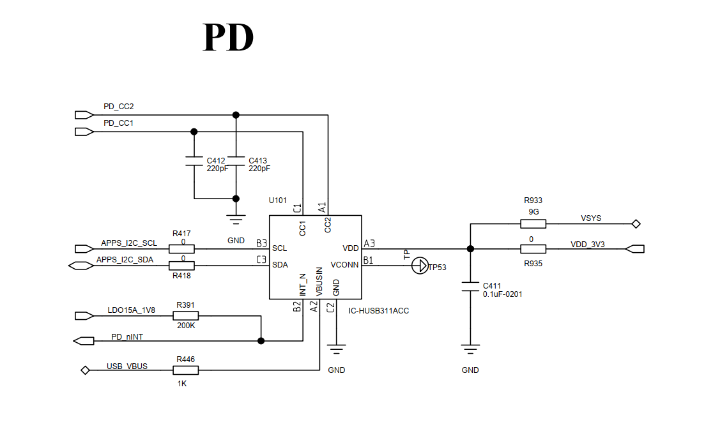
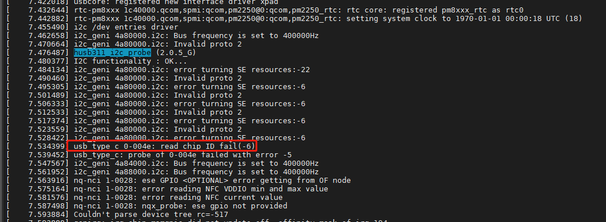
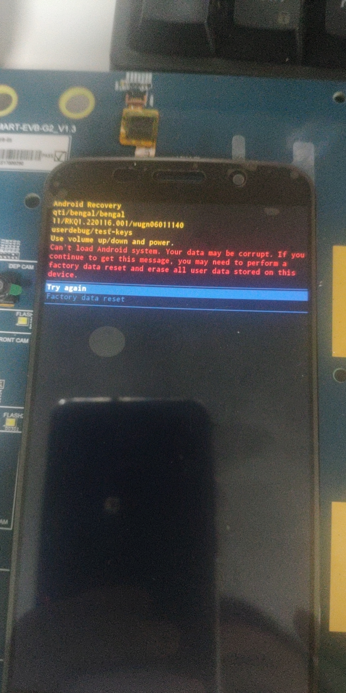
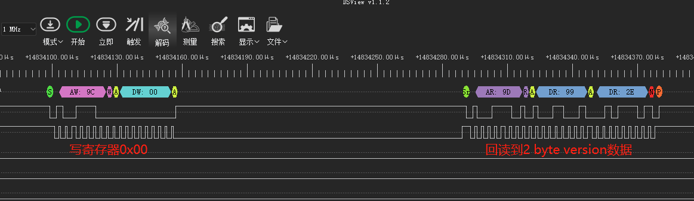
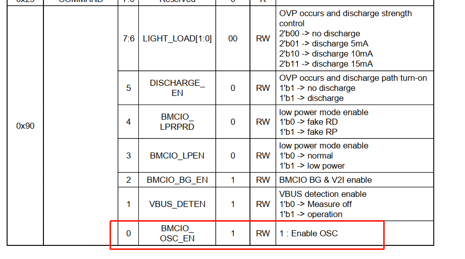
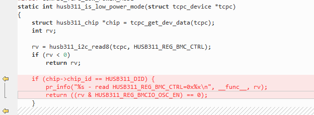
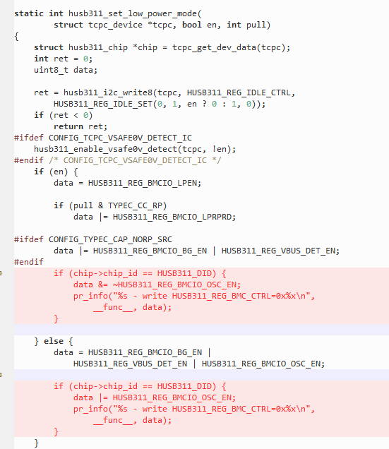
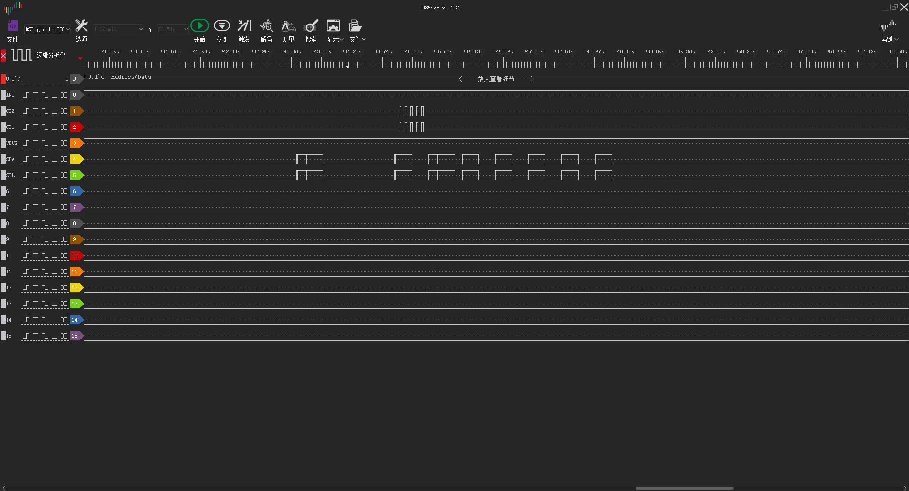
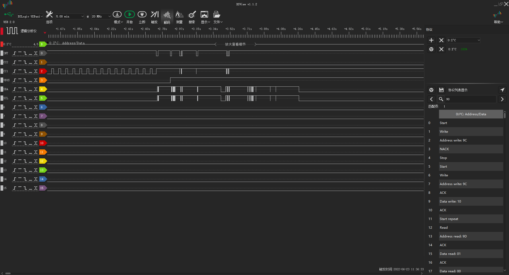
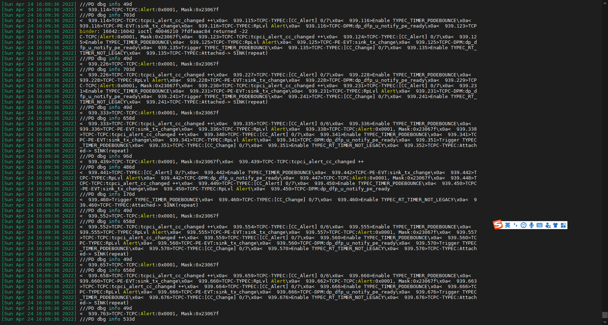

概述
TypeC_高通A665x_USB_Type-C_PD_Controller_HUSB311调试记录。
参考
[HUSB311 code.zip](refers/HUSB311 code.zip)
硬件信息
原理图：

pin97：GPIO_31 连接充电IC的中断
pin98： GPIO_107 连接PD中断
pin36：I2C_SDA
pin37：I2C_SCL
调试过程
1.i2c不通
将代码移植进去，发现i2c不通，打印如下：

硬件测试，发现sda没有输出：

修改i2c为，还是不通，打印如下：
7.455737] i2c_geni 4a94000.i2c: Bus frequency is set to 400000Hz
[ 7.455937] nq-nci 0-0028: error reading NFC VDDIO min and max value
[ 7.464122] i2c_geni 4a94000.i2c: Invalid proto 1
[ 7.468527] nq-nci 0-0028: error reading NFC current value
[ 7.474099] husb311_i2c_probe (2.0.5_G)
[ 7.479001] nq-nci 0-0028: nqx_probe: ese gpio not provided
[ 7.482639] I2C functionality : OK...
[ 7.488962] genirq: irq_chip msmgpio did not update eff. affinity mask of irq 194
[ 7.491914] i2c_geni 4a94000.i2c: error turning SE resources:-22
[ 7.499596] nq-nci 0-0028: nfc_ldo_config: regulator entry not present
[ 7.505639] i2c_geni 4a94000.i2c: Invalid proto 1
[ 7.516794] i2c_geni 4a94000.i2c: error turning SE resources:-6
[ 7.522946] i2c_geni 4a94000.i2c: Invalid proto 1
[ 7.527754] i2c_geni 4a94000.i2c: error turning SE resources:-6
[ 7.533903] i2c_geni 4a94000.i2c: Invalid proto 1
[ 7.538718] i2c_geni 4a94000.i2c: error turning SE resources:-6
[ 7.544845] i2c_geni 4a84000.i2c: i2c error :-107
[ 7.544921] i2c_geni 4a94000.i2c: Invalid proto 1
[ 7.549634] nq-nci 0-0028: nfcc_hw_check: - i2c_master_send core reset Error
[ 7.554396] i2c_geni 4a94000.i2c: error turning SE resources:-6
[ 7.567360] usb_type_c 2-004e: read chip ID fail(-6)
[ 7.572414] usb_type_c: probe of 2-004e failed with error -5
[ 7.592200] i2c_geni 4a84000.i2c: i2c error :-107
[ 7.597012] nq-nci 0-0028: nfcc_hw_check: - i2c_master_send get version cmd Error
[ 7.599151] Couldn't parse device tree rc=-517
[ 7.604542] nq-nci 0-0028: nfcc_hw_check: - NFCC HW not available
[ 7.616105] nq-nci 0-0028: nqx_probe: probing nqxx failed, check hardware
替换默认devcfg配置
需要将SE0默认配置修改为i2c，移远提供默认配置镜像过来烧录，发现起不来，应该是avb校验不过，我们开了efuse不能直接用他们编出来的镜像：
镜像名称：devcfg.mbn
烧录方式：
adb reboot bootloader
fastboot flash devcfg_a devcfg.mbn
fastboot flash devcfg_b devcfg.mbn
fastboot reboot
启动log：
B - 4835683 - RPM Image Loaded, Start
D - 928 - Auth Metadata
D - 1414 - Segments hash check
D - 13588 - RPM Image Loaded, Delta - (220788 Bytes)
B - 4852501 - QSEE Dev Config Image Loaded, Start
D - 989 - Auth Metadata
B - 4862147 - Mem dump cmd, entry
D - 4 - Mem dump cmd, exit
B - 4868124 - Error code 2600000b at boot_config.c Line 248
B - 4871219 - ^^^^- Printing Call Stack -^^^^
B - 4876696 - func_addr : 0C23B9BC
B - 4880957 - func_addr : 0C23BDA8
B - 4884527 - func_addr : 0C22F5B8
B - 4888098 - func_addr : 0C2259A8
B - 4891669 - ^^^^^- Done Printing -^^^^^
解决方案：移远提供编译中间文件替换
Z:\A665x-project\A665x_Unpacking_Tool\TZ.XF.5.1\trustzone_images\build\ms\bin\FAYAANAA，全编然后烧录，发现直接进入recovery模式，选择格式化数据正常启动。

i2cget无法获取数据，报错greater than highest Fmax
以下是启动log：
[ 7.957778] i2c /dev entries driver
[ 7.964917] i2c_geni 4a80000.i2c: Bus frequency is set to 400000Hz
[ 7.973010] Rate 300000000 for gcc_qupv3_wrap0_s0_clk_src is greater than highest Fmax
[ 7.981861] husb311_i2c_probe (2.0.5_G)
[ 7.985755] I2C functionality : OK...
[ 7.989529] i2c_geni 4a80000.i2c: error turning SE resources:-22
[ 7.995758] Rate 300000000 for gcc_qupv3_wrap0_s0_clk_src is greater than highest Fmax
[ 8.003790] i2c_geni 4a80000.i2c: error turning SE resources:-22
[ 8.010037] Rate 300000000 for gcc_qupv3_wrap0_s0_clk_src is greater than highest Fmax
[ 8.018061] i2c_geni 4a80000.i2c: error turning SE resources:-22
[ 8.024277] Rate 300000000 for gcc_qupv3_wrap0_s0_clk_src is greater than highest Fmax
[ 8.032358] i2c_geni 4a80000.i2c: error turning SE resources:-22
[ 8.038579] Rate 300000000 for gcc_qupv3_wrap0_s0_clk_src is greater than highest Fmax
[ 8.046784] i2c_geni 4a80000.i2c: error turning SE resources:-22
[ 8.052864] usb_type_c 0-004e: read chip ID fail(-22)
[ 8.058000] usb_type_c: probe of 0-004e failed with error -5
[ 8.065971] i2c_geni 4a84000.i2c: Bus frequency is set to 400000Hz
[ 8.080211] i2c_geni 4a88000.i2c: Bus frequency is set to 400000Hz
对比之前的没有以下打印：
[ 7.544845] i2c_geni 4a84000.i2c: i2c error :-107
[ 7.544921] i2c_geni 4a94000.i2c: Invalid proto 1
但是多了:
[ 8.010037] Rate 300000000 for gcc_qupv3_wrap0_s0_clk_src is greater than highest Fmax
[ 8.018061] i2c_geni 4a80000.i2c: error turning SE resources:-22
而且使用命令i2cget -f -y 0 0x4e 0x00的时候也会出现这个打印，切逻辑分析仪没数据。
搜索一下代码：
wugn@jcrj-tf-compile:msm-4.19$ ack "is greater than highest Fmax" drivers/
drivers/clk/qcom/clk-cpu-sdm.c
575: pr_err("Rate %lu for %s is greater than highest Fmax\n", rate,
static int find_vdd_level(struct clk_init_data *clk_intd, unsigned long rate)
{
int level;
for (level = 0; level < clk_intd->num_rate_max; level++)
if (rate <= clk_intd->rate_max[level])
break;
if (level == clk_intd->num_rate_max) {
pr_err("Rate %lu for %s is greater than highest Fmax\n", rate,
clk_intd->name);
return -EINVAL;
}
return level;
}
解决方案：
1.QUP SE0目前配置成I2C，供charger、电量计、PD等使用。
2.QUP SE0去除Uart0功能配置，只存在一种功能复用。
3.QUP SE1默认配置为串口功能，修改A665x_Unpacking_Tool/TZ.XF.5.1/trustzone_images/build/ms/bin/FAYAANAA TZ编译文件。
--- a/A665x_Unpacking_Tool/BOOT.XF.4.1/boot_images/QcomPkg/Library/HSUartQupv3Lib/HSUartSettings.h
+++ b/A665x_Unpacking_Tool/BOOT.XF.4.1/boot_images/QcomPkg/Library/HSUartQupv3Lib/HSUartSettings.h
@@ -76,6 +76,8 @@ static const char *se_clocks_str_2 [] =
"gcc_qupv3_wrap2_s5_clk",
};
+//[FEATURE]-Add-BEGIN by xxx@xxxxx.com, 2022/07/15, for disble QUP SE0 as uart0 function
+/*
static HSUART_PROPERTIES devices =
{
// MAIN_PORT
@@ -94,7 +96,27 @@ static HSUART_PROPERTIES devices =
0 // TCSR value
};
+*/
+static HSUART_PROPERTIES devices =
+{
+ // MAIN_PORT
+ 0x04A84000, // uart_base
+ 0x04AC0000, // qup_common_base
+ 0x2001c451, // gpio_tx_config
+ 0x20008461, // gpio_rx_config
+ 0x20008041, // gpio_cts_config
+ 0x2001c051, // gpio_rfr_config
+ 0, // clock_id_index
+ (uint8 **)common_clocks_str_0, // common_clock_id
+ (uint8 **)se_clocks_str_0, // core_clock_id
+ 0, // irq number
+ 0, //TCSR base
+ 0, // TCSR offset
+ 0 // TCSR value
+
+};
+//[FEATURE]-Add-END by xxx@xxxxx.com, 2022/07/15, for disble QUP SE0 as uart0 function
static uint8 __attribute__ ((aligned (4))) qup_v1_2_uart_fw[] =
{
diff --git a/A665x_Unpacking_Tool/BOOT.XF.4.1/boot_images/QcomPkg/SocPkg/AgattiPkg/Settings/UART/UartSettings.c b/A665x_Unpacking_Tool/BOOT.XF.4.1/boot_images/QcomPkg/SocPkg/AgattiPkg/Settings/UART/UartSettings.c
index 45148d24c61..1d2a8cb8dd9 100755
--- a/A665x_Unpacking_Tool/BOOT.XF.4.1/boot_images/QcomPkg/SocPkg/AgattiPkg/Settings/UART/UartSettings.c
+++ b/A665x_Unpacking_Tool/BOOT.XF.4.1/boot_images/QcomPkg/SocPkg/AgattiPkg/Settings/UART/UartSettings.c
@@ -16,6 +16,8 @@ DESCRIPTION: UEFI driver settings for QUP UART
#include "UartDefs.h"
#include "ClockBoot.h"
+//[FEATURE]-Add-BEGIN by xxx@xxxxx.com, 2022/07/15, for disble QUP SE0 as uart0 function
+/*
UART_PROPERTIES devices_uart5 =
{
// MAIN_PORT
@@ -34,6 +36,26 @@ UART_PROPERTIES devices_uart5 =
0 // TCSR value
};
+UART_PROPERTIES devices_uart5 =
+{
+ // MAIN_PORT
+ 0x04A84000, // uart_base
+ 0x04AC0000, // qup_common_base
+ 0x2001c451, // gpio_tx_config
+ 0x20008461, // gpio_rx_config
+ 0, // gpio_cts_config
+ 0, // gpio_rfr_config
+ 0, // clock_id_index
+ (void*)0, // bus_clock_id
+ (void*)CLK_QUPV3_WRAP0_S1, // core_clock_id
+ 0, // irq number
+ 0, //TCSR base
+ 0, // TCSR offset
+ 0 // TCSR value
+
+};
+//[FEATURE]-Add-END by xxx@xxxxx.com, 2022/07/15, for disble QUP SE0 as uart0 function
UART_PROPERTIES devices =
{
diff --git a/UM.9.15/bootable/bootloader/edk2/QcomModulePkg/Application/LinuxLoader/LinuxLoader.c b/UM.9.15/bootable/bootloader/edk2/QcomModulePkg/Application/LinuxLoader/LinuxLoader.c
index c56d81e2b76..d8da5368820 100644
--- a/UM.9.15/bootable/bootloader/edk2/QcomModulePkg/Application/LinuxLoader/LinuxLoader.c
+++ b/UM.9.15/bootable/bootloader/edk2/QcomModulePkg/Application/LinuxLoader/LinuxLoader.c
@@ -171,14 +171,19 @@ WaitForDisplayCompletion (VOID)
**/
#define UART_DEBUG 0
static int Is_Enter_Fctmode(int value){
- CHAR8 Char;
- UINT8 Buffer_start[] = { "Android Bootloader - UART_DM Initialized!!!\r\n" };
+ //[FEATURE]-Add-BEGIN by xxx@xxxxx.com, 2022/07/15, for disble QUP SE0 as uart0 function
+ //CHAR8 Char;
+ //UINT8 Buffer_start[] = { "Android Bootloader - UART_DM Initialized!!!\r\n" };
+ //[FEATURE]-Add-END by xxx@xxxxx.com, 2022/07/15, for disble QUP SE0 as uart0 function
#if UART_DEBUG
uart_initialize();
uart_write(Buffer_start,45);
DEBUG ((EFI_D_ERROR, "uart init end\n"));
#endif
+
+//[FEATURE]-Add-BEGIN by xxx@xxxxx.com, 2022/07/15, for disble QUP SE0 as uart0 function
+/*
uart5_initialize();
uart5_write(Buffer_start,45);
DEBUG ((EFI_D_ERROR, "uart5 init end\n"));
@@ -196,7 +201,8 @@ static int Is_Enter_Fctmode(int value){
#endif
MicroSecondDelay (1000);
}
-
+*/
+//[FEATURE]-Add-END by xxx@xxxxx.com, 2022/07/15, for disble QUP SE0 as uart0 function
DEBUG ((EFI_D_ERROR, "****** SUCCESS ENTER ANDROID ******\n"));
return 0;
}
高通提供patch
使用patch后，i2c通了，如下：
--- a/A665x_Unpacking_Tool/BOOT.XF.4.1/boot_images/QcomPkg/SocPkg/AgattiPkg/Library/ClockTargetLib/ClockBSP.c
+++ b/A665x_Unpacking_Tool/BOOT.XF.4.1/boot_images/QcomPkg/SocPkg/AgattiPkg/Library/ClockTargetLib/ClockBSP.c
@@ -579,11 +579,15 @@ static ClockMuxConfigType ClockDomainBSP_GCC_GCCQUPV3WRAP0CORE2X[] =
* ClockDomain_GCC_GCCQUPV3WRAP0S4
* ClockDomain_GCC_GCCQUPV3WRAP0S5
*/
+
+#if 1
static ClockMuxConfigType ClockDomainBSP_GCC_GCCQUPV3WRAP0S0[] =
{
+ //{ 3686400, &ClockSource_GCC_GPLL0, { 2, 2, 192, 15625, 0xFF }, RAIL_VOLTAGE_LEVEL_LOW_SVS, }, /* Mux[2] = GCC_GPLL0_OUT_AUX2_PWRGRP35_CLKGEN_ACGC_CLK */
+ { 19200000, NULL, { 0, 2, 0, 0, 0x00 }, RAIL_VOLTAGE_LEVEL_LOW_SVS, }, /* Mux[0] = BI_TCXO */
{ 7372800, &ClockSource_GCC_GPLL0, { 2, 2, 384, 15625, 0xFF }, RAIL_VOLTAGE_LEVEL_LOW_SVS, }, /* Mux[2] = GCC_GPLL0_OUT_AUX2_PWRGRP35_CLKGEN_ACGC_CLK */
{ 14745600, &ClockSource_GCC_GPLL0, { 2, 2, 768, 15625, 0xFF }, RAIL_VOLTAGE_LEVEL_LOW_SVS, }, /* Mux[2] = GCC_GPLL0_OUT_AUX2_PWRGRP35_CLKGEN_ACGC_CLK */
- { 19200000, NULL, { 0, 2, 0, 0, 0x00 }, RAIL_VOLTAGE_LEVEL_LOW_SVS, }, /* Mux[0] = BI_TCXO */
+ //{ 19200000, NULL, { 0, 2, 0, 0, 0x00 }, RAIL_VOLTAGE_LEVEL_LOW_SVS, }, /* Mux[0] = BI_TCXO */
{ 29491200, &ClockSource_GCC_GPLL0, { 2, 2, 1536, 15625, 0xFF }, RAIL_VOLTAGE_LEVEL_LOW_SVS, }, /* Mux[2] = GCC_GPLL0_OUT_AUX2_PWRGRP35_CLKGEN_ACGC_CLK */
{ 32000000, &ClockSource_GCC_GPLL0, { 2, 2, 8, 75, 0x01 }, RAIL_VOLTAGE_LEVEL_LOW_SVS, }, /* Mux[2] = GCC_GPLL0_OUT_AUX2_PWRGRP35_CLKGEN_ACGC_CLK */
{ 48000000, &ClockSource_GCC_GPLL0, { 2, 2, 4, 25, 0x02 }, RAIL_VOLTAGE_LEVEL_LOW_SVS, }, /* Mux[2] = GCC_GPLL0_OUT_AUX2_PWRGRP35_CLKGEN_ACGC_CLK */
@@ -599,6 +603,16 @@ static ClockMuxConfigType ClockDomainBSP_GCC_GCCQUPV3WRAP0S0[] =
{ 128000000, &ClockSource_GCC_GPLL6, { 4, 6, 0, 0, 0xFF }, RAIL_VOLTAGE_LEVEL_NOM, }, /* Mux[4] = GCC_GPLL6_OUT_MAIN_PWRGRP2_CLKGEN_ACGC_CLK */
};
+#else
+static ClockMuxConfigType ClockDomainBSP_GCC_GCCQUPV3WRAP0S0[] =
+{
+ { 19200000, NULL, { 0, 2, 0, 0, 0x00 }, RAIL_VOLTAGE_LEVEL_LOW_SVS, }, /* Mux[0] = BI_TCXO */
+};
+
+
+
+#endif
+
i2c读到版本信息了：
log如下：
[ 5.933431] i2c /dev entries driver
[ 5.940515] i2c_geni 4a80000.i2c: Bus frequency is set to 400000Hz
[ 5.964340] husb311_i2c_probe (2.0.5_G)
[ 5.968264] I2C functionality : OK...
[ 5.972885] husb311_check_revision: vid=0x2e99, pid=0x0311
#define TCPC_V10_REG_VID (0x00)
#define HUSB311_VID 0x2e99
#define HUSB311_PID 0x0311
static inline int husb311_check_revision(struct i2c_client *client)
{
u16 vid, pid, did;
int ret;
u8 data = 1;
ret = husb311_read_device(client, TCPC_V10_REG_VID, 2, &vid);
if (ret < 0) {
dev_err(&client->dev, "read chip ID fail(%d)\n", ret);
return -EIO;
}
if (vid != HUSB311_VID) {
pr_info("%s failed, VID=0x%04x\n", __func__, vid);
// return -ENODEV;
}
ret = husb311_read_device(client, TCPC_V10_REG_PID, 2, &pid);
if (ret < 0) {
dev_err(&client->dev, "read product ID fail(%d)\n", ret);
// return -EIO;
}
if (pid != HUSB311_PID) {
pr_info("%s failed, PID=0x%04x\n", __func__, pid);
// return -ENODEV;
}
pr_info("%s: vid=0x%04x, pid=0x%04x\n", __func__, vid, pid);
ret = husb311_write_device(client, HUSB311_REG_SWRESET, 1, &data);
// if (ret < 0)
// return ret;
usleep_range(1000, 2000);
ret = husb311_read_device(client, TCPC_V10_REG_DID, 2, &did);
if (ret < 0) {
dev_err(&client->dev, "read device ID fail(%d)\n", ret);
// return -EIO;
}
return did;
}
逻辑分析仪抓取数据：

2.dts无法加载启动
烧录最新软件发现打印Get Pax Main Board Failed.，启动不了，咨询剑锋说目前Main Board都是从cfg分区获取的，需要烧录配置文件A665x-AA200-260A-2N0-EA_Config_2570000_SIG_V1.0.ini，内容如下：
TOUCH_SCREEN="257"
LCD="257"
FPM="11"
WIFI="36"
WIFI_PA="04"
CAMERA_NUMBER="01"
CAMERA_FRONT="80"
MAIN_BOARD="V01"
PORT_BOARD="V01"
PN="A665x-AA200-260A-2N0-EA"
CONFIG_FILE_VER="2570000_V1.0"
TERMINAL_NAME="A665x"|?]!@S
fastboot flash cfg A665x-AA200-260A-2N0-EA_Config_2570000_SIG_V1.0.ini
所有采用xxxxx签名镜像。
SUMMARY:
Following actions were performed: "validate"
Following Multi-Image Sign & Integrity actions were performed: "sign, validate"
Output is saved at: /home/wugn/A665x-project/Unpacking_Tool/QCM2290.LA.2.0/common/build/bin/multi_image
| Idx | SignId | Parse | Integrity | Sign | Encrypt | Validate |
| | | | | | | Parse | Integrity | Sign | Encrypt |
|-----|-------------------|-------|-----------|------|---------|-------|-----------|------|---------|
| 1. | xbl | NA | NA | NA | NA | T | T | T | NA |
| 2. | xbl_config | NA | NA | NA | NA | T | T | T | NA |
| 3. | abl | NA | NA | NA | NA | T | T | T | NA |
| 4. | prog_firehose_ddr | NA | NA | NA | NA | T | T | T | NA |
| 5. |prog_firehouse_lite| NA | NA | NA | NA | T | T | T | NA |
| 6. | modem | NA | NA | NA | NA | T | T | T | NA |
| 7. | tz | NA | NA | NA | NA | T | T | T | NA |
| 8. | hyp | NA | NA | NA | NA | T | T | T | NA |
| 9. | devcfg | NA | NA | NA | NA | T | T | T | NA |
| 10. | adsp | NA | NA | NA | NA | T | T | T | NA |
| 11. | wlan | NA | NA | NA | NA | T | T | T | NA |
| 12. | venus | NA | NA | NA | NA | T | T | T | NA |
| 13. | sampleapp32 | NA | NA | NA | NA | T | T | T | NA |
| 14. | sampleapp64 | NA | NA | NA | NA | T | T | T | NA |
| 15. | keymaster | NA | NA | NA | NA | T | T | T | NA |
| 16. | km41 | NA | NA | NA | NA | T | T | T | NA |
| 17. | hdcpsrm | NA | NA | NA | NA | T | T | T | NA |
| 18. | gfx_microcode | NA | NA | NA | NA | T | T | T | NA |
| 19. | uefisecapp | NA | NA | NA | NA | T | T | T | NA |
| 20. | storsec | NA | NA | NA | NA | T | T | T | NA |
| 21. | rtic | NA | NA | NA | NA | T | T | T | NA |
| 22. | featenabler | NA | NA | NA | NA | T | T | T | NA |
| 23. | qupv3 | NA | NA | NA | NA | T | T | T | NA |
| 24. | rpm | NA | NA | NA | NA | T | T | T | NA |
| 25. | imagefv | NA | NA | NA | NA | T | T | T | NA |
| 26. | multi_image | T | NA | T | NA | T | T | T | NA |
3.烧录后kernel报错
i2c通了，但是卡在kernel死机了，log如下：
[ 5.933431] i2c /dev entries driver
[ 5.940515] i2c_geni 4a80000.i2c: Bus frequency is set to 400000Hz
[ 5.964340] husb311_i2c_probe (2.0.5_G)
[ 5.968264] I2C functionality : OK...
[ 5.972885] husb311_check_revision: vid=0x2e99, pid=0x0311
[ 5.981197] 0
[ 5.982808] pr_info : t2-t1 = 1610
[ 5.986266] 1
[ 5.987894] pr_info : t2-t1 = 1627
[ 5.991343] 2
[ 5.992958] pr_info : t2-t1 = 1614
[ 5.996404] 3
[ 5.998014] pr_info : t2-t1 = 1609
[ 6.001465] 4
[ 6.003070] pr_info : t2-t1 = 1605
[ 6.006521] 5
[ 6.008155] pr_info : t2-t1 = 1633
[ 6.011608] 6
[ 6.013220] pr_info : t2-t1 = 1611
[ 6.016666] 7
[ 6.018277] pr_info : t2-t1 = 1611
[ 6.021816] 8
[ 6.023449] pr_info : t2-t1 = 1633
[ 6.026875] 9
[ 6.028503] pr_info : t2-t1 = 1627
[ 6.031966] rt_parse_dt
[ 6.035230] husb311_chipID = 0x0
[ 6.038540] rt_regmap_device_register_ex name = husb311-4e
[ 6.044307] rt_regmap_cache_init
[ 6.047699] rt_regmap_cache_init successfully
[ 6.052113] rt_regmap_husb311-4e: rt_regmap_set_cache_mode mode_mask = 0
[ 6.058961] rt_regmap_husb311-4e: rt_regmap_cache_reload
[ 6.070353] usb_type_c 0-004e: husb311_tcpcdev_init
[ 6.075344] tcpc_device_register register tcpc device (type_c_port0)
[ 6.083548] PD Timer number = 55
[ 8.080729] ///PD dbg info 481d
[ 8.083975] < 5.981>0
[ 8.083975] < 5.981>pd_dbg_info : t2-t1 = 27
[ 8.083975] < 5.981>1
[ 8.083975] < 5.981>pd_dbg_info : t2-t1 = 0
[ 8.083975] < 5.981>2
[ 8.083975] < 5.981>pd_dbg_
[ 8.083982] info : t2-t1 = 0
[ 8.083982] < 5.981>3
[ 8.083982] < 5.981>pd_dbg_info : t2-t1 = 0
[ 8.083982] < 5.981>4
[ 8.083982] < 5.981>pd_dbg_info : t2-t1 = 0
[ 8.083982] < 5.981>5
[ 8.083982] <
[ 8.103585] 5.981>pd_dbg_info : t2-t1 = 0
[ 8.103585] < 5.981>6
[ 8.103585] < 5.981>pd_dbg_info : t2-t1 = 0
[ 8.103585] < 5.981>7
[ 8.103585] < 5.981>pd_dbg_info : t2-t1 = 0
[ 8.124567]
[ 8.124567] < 5.981>8
[ 8.124567] < 5.981>pd_dbg_info : t2-t1 = 0
[ 8.124567] < 5.981>9
[ 8.124567] < 5.981>pd_dbg_info : t2-t1 = 0
[ 12.081931] tcpci_timer_init : init OK
[ 12.085763] pd_parse_pdata
[ 12.088590] pd_parse_pdata src pdo data =
[ 12.092652] pd_parse_pdata 0: 0x00019032
[ 12.096643] pd_parse_pdata snk pdo data =
[ 12.100695] pd_parse_pdata 0: 0x000190c8
[ 12.104673] pd_parse_pdata id vdos data =
[ 12.108729] pd_parse_pdata 0: 0xd10029cf
[ 12.112694] pd_parse_pdata 1: 0x00000000
[ 12.116659] pd_parse_pdata 2: 0x17110000
[ 12.120623] pd_parse_pdata charging_policy = 49
[ 12.125202] pd_parse_pdata_bats Battery NR = 1
[ 12.129805] pd_parse_pdata_bats fix_bat_info[0].mfrs_info.vid = 0x29cf, .mfrs_info.pid = 0x17 11, .mfrs_string = bat1, .bat_design_cap = 3000
[ 12.142460] pd_parse_pdata_countries Country NR = 0
[ 12.147406] pd_parse_log_src_cap_ext vid = 0x29cf, pid = 0x1711, xid = 0x0, fw_ver = 0x0, hw_ ver = 0x0
[ 12.156757] pd_parse_log_src_cap_ext voltage_regulation = 0, hold_time_ms = 0, compliance = 0 x0, touch_current = 0x0, peak_current = 0 0 0
[ 12.169233] pd_parse_log_src_cap_ext touch_temp = 0, source_inputs = 0x0, batteries = 0x0, so urce_pdp = 0x2
[ 12.179018] pd_parse_pdata_mfrs VID = 0x2e99, PID = 0x311
[ 12.184460] pd_parse_pdata_mfrs PD mfrs_string = HynetekTCPC
[ 12.190171] dpm_caps: local_dr_power
[ 12.193792] dpm_caps: local_dr_data
[ 12.197328] dpm_caps: local_ext_power
[ 12.201033] dpm_caps: local_usb_comm
[ 12.204647] dpm_caps: local_usb_suspend
[ 12.208532] dpm_caps: local_high_cap
[ 12.212149] dpm_caps: local_give_back
[ 12.215850] dpm_caps: local_no_suspend
[ 12.219638] dpm_caps: local_vconn_supply
[ 12.223605] dpm_caps: attemp_discover_cable_dfp
[ 12.228174] dpm_caps: attemp_enter_dp_mode
[ 12.232317] dpm_caps: attemp_discover_cable
[ 12.236547] dpm_caps: attemp_discover_id
[ 12.240510] dpm_caps: attemp_discover_svid
[ 12.244651] dpm_caps: pr_reject_as_source
[ 12.248704] dpm_caps: pr_reject_as_sink
[ 12.252577] dpm_caps: pr_check_gp_source
[ 12.256546] dpm_caps: pr_check_gp_sink
[ 12.260343] dpm_caps: dr_reject_as_dfp
[ 12.264128] dpm_caps: dr_reject_as_ufp
[ 12.267928] dpm_caps = 0x0000e18b
[ 12.271310] dp, svid
[ 12.273533] dp, ufp_np
[ 12.275949] dp, dfp_np
[ 12.278370] dp, 1st_connection
[ 12.281477] dp, 2nd_connection
[ 12.284617] ///PD dbg info 84d
[ 12.287840] < 12.284>TCPC-DPM:register_svdm: 0xff01
[ 12.287840] < 12.284>TCPC-DPM:register_svdm: 0x29cf
[ 12.288231] tcpc type_c_port0: tcpc fail to register dual role usb
[ 12.304199] tcpc type_c_port0: dual role usb init fail
[ 12.307206] ///PD dbg info 32d
[ 12.309382] tcpc_device_register ---
[ 12.312455] < 12.285>TCPC-PE:pd_core_init
[ 12.316075] usb_type_c 0-004e: PD_REV30
[ 12.324904] husb311_init_alert name = type_c_port0, gpio = 1260
[ 12.331973] husb311_init_alert : IRQ number = 194
[ 12.337369] IRQF_NO_THREAD Test
[ 12.340637] genirq: irq_chip msmgpio did not update eff. affinity mask of irq 194
[ 12.348536] tcpc_schedule_init_work wait 2 num
[ 12.353041] husb311_i2c_probe probe OK!
报错部分：
[ 44.003307] tcpc_init_work force start
[ 44.007106] tcpc_init_work force start
[ 44.010974] tcpc_device_irq_enable : +++
[ 44.031740] ///PD dbg info 41d
[ 44.034844] < 44.031>TCPC-TYPEC:typec_init: TrySNK
[ 44.045567] tcpc_device_irq_enable : tcpc irq enable OK!
[ 44.064600] ///PD dbg info 77d
[ 44.067817] < 44.041>TCPC-TYPEC:PowerOffCharge
[ 44.067817] < 44.041>TCPC-TYPEC:** Unattached.SNK
[ 44.544579] husb311_set_low_power_mode - write HUSB311_REG_BMC_CTRL=0xe
[ 44.552112] husb311_is_low_power_mode - read HUSB311_REG_BMC_CTRL=0x3
[ 44.559077] ///PD dbg info 35d
[ 44.562342] < 44.558>TCPC-TYPEC:RetryLPM : 4
[ 45.060193] husb311_set_low_power_mode - write HUSB311_REG_BMC_CTRL=0xe
[ 45.067703] husb311_is_low_power_mode - read HUSB311_REG_BMC_CTRL=0x3
[ 45.074293] ///PD dbg info 35d
[ 45.077870] < 45.074>TCPC-TYPEC:RetryLPM : 3
[ 45.575700] husb311_set_low_power_mode - write HUSB311_REG_BMC_CTRL=0xe
[ 45.583282] husb311_is_low_power_mode - read HUSB311_REG_BMC_CTRL=0x3
[ 45.590143] ///PD dbg info 35d
[ 45.593277] < 45.589>TCPC-TYPEC:RetryLPM : 2
[ 46.100528] resize.f2fs: [migrate_ssa: 271] Info: Done to migrate SSA blocks: sum_blkaddr = 0 x1200 -> 0x7600
[ 48.099581] cam_iovdd1v8: disabling
[ 48.107347] cam_avdd2v8: disabling
[ 48.110796] cam_vdig1v2: disabling
[ 48.131263] cam_front_vdig1v2: disabling
[ 48.147438] vreg_usb_3p1: disabling
[ 51.072814] resize.f2fs: [migrate_nat: 388] Info: Done to migrate NAT blocks: nat_blkaddr = 0 xa00 -> 0xa00
[ 51.271662] resize.f2fs: [migrate_sit: 446] Info: Done to restore new SIT blocks: 0x600
[ 51.574379] resize.f2fs: Info: Write valid nat_bits in checkpoint
[ 51.583405] resize.f2fs: [rebuild_checkpoint: 591] Info: Done to rebuild checkpoint blocks
[ 51.615932] resize.f2fs: [update_superblock: 706] Info: Done to update superblock
[ 67.083127] rcu: INFO: rcu_preempt self-detected stall on CPU
[ 67.088914] rcu: 0-...!: (5251 ticks this GP) idle=7e6/0/0x3 softirq=3802/3803 fqs=1 last_accelerate: 0000/1c8b, nonlazy_posted: 0, LD
[ 67.095135] rcu: INFO: rcu_sched detected stalls on CPUs/tasks:
[ 67.101108] rcu: (t=5253 jiffies g=8537 q=0)
[ 67.107049] rcu: 0-....: (5256 ticks this GP) idle=7e6/0/0x3 softirq=3797/3803 fqs=5186 last_accelerate: 0000/1c8d, nonlazy_posted: 0, LD
[ 67.111504] rcu: rcu_preempt kthread starved for 5252 jiffies! g8537 f0x0 RCU_GP_WAIT_FQS(5) ->state=0x402 ->cpu=0
[ 67.123951] rcu: (detected by 1, t=5252 jiffies, g=125, q=0)
[ 67.134311] rcu: RCU grace-period kthread stack dump:
[ 67.140073] Task dump for CPU 0:
[ 67.145137] rcu_preempt I13664 11 2 0x00000028
[ 67.148380] swapper/0 R running task 13552 0 0 0x0000002a
[ 67.153875] Call trace:
[ 67.160941] Call trace:
[ 67.163418] __switch_to+0x128/0x138
[ 67.165875] __switch_to+0x128/0x138
[ 67.169465] __schedule+0xb28/0xcb0
[ 67.173054] __tracepoint_cpu_idle+0x0/0x28
[ 67.176556] schedule+0x70/0x90
[ 67.183905] schedule_timeout+0x518/0x6c8
[ 67.187942] rcu_gp_kthread+0x584/0x9d8
[ 67.191801] kthread+0x14c/0x160
[ 67.195054] ret_from_fork+0x10/0x1c
[ 67.198685] Task dump for CPU 0:
[ 67.201934] swapper/0 R running task 13552 0 0 0x0000002a
[ 67.209013] Call trace:
[ 67.211487] dump_backtrace+0x0/0x260
[ 67.215167] show_stack+0x20/0x30
[ 67.218509] sched_show_task+0x144/0x150
[ 67.222454] dump_cpu_task+0x44/0x50
[ 67.226051] rcu_dump_cpu_stacks+0xe4/0x100
[ 67.230261] rcu_check_callbacks+0x80c/0xbc0
[ 67.234559] update_process_times+0x7c/0x100
[ 67.238855] tick_sched_timer+0x98/0x138
[ 67.242800] __hrtimer_run_queues+0x260/0x3b0
[ 67.247178] hrtimer_interrupt+0x108/0x358
[ 67.251294] arch_timer_handler_virt+0x40/0x50
[ 67.255761] handle_percpu_devid_irq+0x130/0x2a0
[ 67.260398] __handle_domain_irq+0xa0/0xf8
[ 67.264513] gic_handle_irq+0x160/0x1d8
[ 67.268376] el1_irq+0xec/0x198
[ 67.271539] __do_softirq+0x10c/0x470
[ 67.275230] irq_exit+0xd0/0xd8
[ 67.278389] __handle_domain_irq+0xa8/0xf8
[ 67.282502] gic_handle_irq+0x160/0x1d8
[ 67.286363] el1_irq+0xec/0x198
[ 67.289523] lpm_cpuidle_enter+0x500/0x540
[ 67.293636] cpuidle_enter_state+0x204/0x3b0
[ 67.297929] cpuidle_enter+0x30/0x40
[ 67.301529] do_idle+0x1d4/0x2c0
[ 67.304776] cpu_startup_entry+0x24/0x28
[ 67.308727] rest_init+0xcc/0xd8
[ 67.312002] start_kernel+0x510/0x5e0
[ 76.771889] [FTS_TS/I]fts_get_fw_file_via_request_firmware:firmware(focaltech_ts_fw_gvo.bin) request fail,ret=-11
[ 76.791740] [FTS_TS/E]fts_fwupg_get_fw_file:fw file len(1) fail
[ 76.803076] [FTS_TS/E]fts_fwupg_work:get file fail, can't upgrade
[ 88.363124] rcu: INFO: rcu_preempt self-detected stall on CPU
[ 88.368906] rcu: 0-....: (1 GPs behind) idle=7e6/0/0x3 softirq=3802/3803 fqs=5245 last_accelerate: 0000/3153, nonlazy_posted: 0, LD
[ 88.380831] rcu: (t=5252 jiffies g=8541 q=0)
[ 88.385299] Task dump for CPU 0:
[ 88.388543] swapper/0 R running task 13552 0 0 0x0000002a
[ 88.395623] Call trace:
[ 88.398100] dump_backtrace+0x0/0x260
[ 88.401782] show_stack+0x20/0x30
[ 88.405114] sched_show_task+0x144/0x150
[ 88.409059] dump_cpu_task+0x44/0x50
[ 88.412654] rcu_dump_cpu_stacks+0xe4/0x100
[ 88.416852] rcu_check_callbacks+0x80c/0xbc0
[ 88.421146] update_process_times+0x7c/0x100
[ 88.425441] tick_sched_timer+0x98/0x138
[ 88.429386] __hrtimer_run_queues+0x260/0x3b0
[ 88.433763] hrtimer_interrupt+0x108/0x358
[ 88.437879] arch_timer_handler_virt+0x40/0x50
[ 88.442344] handle_percpu_devid_irq+0x130/0x2a0
[ 88.446978] __handle_domain_irq+0xa0/0xf8
[ 88.451091] gic_handle_irq+0x160/0x1d8
[ 88.454952] el1_irq+0xec/0x198
[ 88.458110] __do_softirq+0x10c/0x470
[ 88.461788] irq_exit+0xd0/0xd8
[ 88.464946] __handle_domain_irq+0xa8/0xf8
[ 88.469059] gic_handle_irq+0x160/0x1d8
[ 88.472920] el1_irq+0xec/0x198
[ 88.476079] lpm_cpuidle_enter+0x500/0x540
[ 88.480193] cpuidle_enter_state+0x204/0x3b0
[ 88.484486] cpuidle_enter+0x30/0x40
[ 88.488080] do_idle+0x1d4/0x2c0
[ 88.491326] cpu_startup_entry+0x24/0x28
[ 88.495273] rest_init+0xcc/0xd8
[ 88.498520] start_kernel+0x510/0x5e0
[ 116.069349] watchdog: BUG: soft lockup - CPU#0 stuck for 23s! [swapper/0:0]
[ 116.076332] Modules linked in: machine_dlkm(O) rouleur_slave_dlkm(O) rouleur_dlkm(O) pm2250_spmi_dlkm(O) wcd937x_slave_dlkm(O) wcd937x_dlkm(O) mbhc_dlkm(O) tx_macro_dlkm(O) rx_macro_dlkm(O) va_macro_dlkm(O) bolero_cdc_dlkm(O) wsa881x_analog_dlkm(O) wcd9xxx_dlkm(O) wcd_core_dlkm(O) stub_dlkm(O) swr_ctrl_dlkm(O) swr_dlkm(O) pinctrl_lpi_dlkm(O) usf_dlkm(O) native_dlkm(O) platform_dlkm(O) q6_dlkm(O) adsp_loader_dlkm(O) apr_dlkm(O) snd_event_dlkm(O) q6_notifier_dlkm(O) q6_pdr_dlkm(O)
[ 116.118787] CPU: 0 PID: 0 Comm: swapper/0 Tainted: G W O 4.19.157 #14
[ 116.126379] Hardware name: Qualcomm Technologies, Inc. Scuba IOT IDP (DT)
[ 116.133186] pstate: 20400005 (nzCv daif +PAN -UAO)
[ 116.138001] pc : __do_softirq+0x10c/0x470
[ 116.142036] lr : __do_softirq+0x108/0x470
[ 116.146066] sp : ffffff8008003eb0
[ 116.149399] x29: ffffff8008003ee0 x28: 0000000000000282
[ 116.154734] x27: ffffffa3ceb778f8 x26: ffffffa3cee29000
[ 116.160068] x25: ffffffa3ce6dfb50 x24: ffffffa3ce6eb340
[ 116.165402] x23: ffffffa3ced7ab40 x22: ffffffa3ce4326f2
[ 116.170736] x21: ffffffa3ced7ab18 x20: 0000000000000000
[ 116.176065] x19: ffffffa3ceb84500 x18: 0000000000000000
[ 116.181400] x17: 0000000005f5e100 x16: 0000000000000000
[ 116.186737] x15: ffffffffff859ef0 x14: 0000000001312d00
[ 116.192071] x13: 0000000000000004 x12: 0000000034bc78ce
[ 116.197405] x11: 0000000000000015 x10: 000000000682aaab
[ 116.202740] x9 : 0000000000000001 x8 : 0000000000000101
[ 116.208074] x7 : 000000003f47f087 x6 : ffffffeb8f1813ae
[ 116.213407] x5 : 0000000000000001 x4 : ffffffa3ceb84500
[ 116.218743] x3 : ffffff8008003e48 x2 : ffffffa3cc697680
[ 116.224078] x1 : ffffffa3cc6cd020 x0 : 0000000abb3eef26
[ 116.229415] Call trace:
[ 116.231892] __do_softirq+0x10c/0x470
[ 116.235573] irq_exit+0xd0/0xd8
[ 116.238733] __handle_domain_irq+0xa8/0xf8
[ 116.242846] gic_handle_irq+0x160/0x1d8
[ 116.246708] el1_irq+0xec/0x198
[ 116.249868] lpm_cpuidle_enter+0x500/0x540
[ 116.253981] cpuidle_enter_state+0x204/0x3b0
[ 116.258273] cpuidle_enter+0x30/0x40
[ 116.261868] do_idle+0x1d4/0x2c0
[ 116.265120] cpu_startup_entry+0x24/0x28
[ 116.269068] rest_init+0xcc/0xd8
[ 116.272322] start_kernel+0x510/0x5e0
[ 123.875204] BUG: workqueue lockup - pool cpus=0 node=0 flags=0x0 nice=0 stuck for 77s!
[ 123.883221] Showing busy workqueues and worker pools:
[ 123.888341] workqueue events: flags=0x0
[ 123.892228] pwq 6: cpus=3 node=0 flags=0x0 nice=0 active=1/256 refcnt=2
[ 123.899040] in-flight: 49:pd_locator_work
[ 123.903475] pwq 2: cpus=1 node=0 flags=0x0 nice=0 active=4/256 refcnt=5
[ 123.910292] in-flight: 47:pd_locator_work, 327:tcpc_event_init_work, 322:pd_locator_work, 22:pd_locator_work
[ 123.920541] pwq 0: cpus=0 node=0 flags=0x0 nice=0 active=1/256 refcnt=2
[ 123.927356] in-flight: 404:pd_locator_work
[ 123.931846] workqueue events_unbound: flags=0x2
[ 123.936424] pwq 8: cpus=0-3 flags=0x4 nice=0 active=1/512 refcnt=3
[ 123.942811] in-flight: 233:log_buf_work_fn
[ 123.947310] workqueue mm_percpu_wq: flags=0x8
[ 123.951713] pwq 0: cpus=0 node=0 flags=0x0 nice=0 active=2/256 refcnt=4
[ 123.958535] pending: vmstat_update, drain_local_pages_wq BAR(233)
[ 123.965032] workqueue pm: flags=0x4
[ 123.968579] pwq 2: cpus=1 node=0 flags=0x0 nice=0 active=1/256 refcnt=2
[ 123.975397] in-flight: 331:pm_runtime_work
[ 123.979910] workqueue kblockd: flags=0x18
[ 123.983967] pwq 3: cpus=1 node=0 flags=0x0 nice=-20 active=2/256 refcnt=3
[ 123.990963] in-flight: 23:blk_mq_run_work_fn blk_mq_run_work_fn
[ 123.997288] workqueue devfreq_wq: flags=0x6000e
[ 124.001857] pwq 8: cpus=0-3 flags=0x4 nice=0 active=1/1 refcnt=3
[ 124.008065] in-flight: 239:devfreq_monitor
[ 124.012565] workqueue MODEM_CNTL: flags=0xe000a
[ 124.017148] pwq 8: cpus=0-3 flags=0x4 nice=0 active=1/1 refcnt=3
[ 124.023348] in-flight: 8:socket_read_work_fn
[ 124.028021] workqueue LPASS_CNTL: flags=0xe000a
[ 124.032592] pwq 8: cpus=0-3 flags=0x4 nice=0 active=1/1 refcnt=3
[ 124.038792] in-flight: 46:socket_read_work_fn
[ 124.043546] workqueue WCNSS_CNTL: flags=0xe000a
[ 124.048119] pwq 8: cpus=0-3 flags=0x4 nice=0 active=1/1 refcnt=3
[ 124.054323] in-flight: 228:socket_read_work_fn
[ 124.059167] workqueue SENSORS_CNTL: flags=0xe000a
[ 124.063915] pwq 8: cpus=0-3 flags=0x4 nice=0 active=1/1 refcnt=3
[ 124.070117] in-flight: 229:socket_read_work_fn
[ 124.074956] workqueue DIAG_CTRL: flags=0xe000a
[ 124.079452] pwq 8: cpus=0-3 flags=0x4 nice=0 active=1/1 refcnt=3
[ 124.085651] in-flight: 230:socket_read_work_fn
[ 124.090502] workqueue CDSP_CNTL: flags=0xe000a
[ 124.094998] pwq 8: cpus=0-3 flags=0x4 nice=0 active=1/1 refcnt=3
[ 124.101204] in-flight: 231:socket_read_work_fn
[ 124.106034] workqueue NPU_CNTL: flags=0xe000a
[ 124.110434] pwq 8: cpus=0-3 flags=0x4 nice=0 active=1/1 refcnt=3
[ 124.116640] in-flight: 232:socket_read_work_fn
[ 124.121521] workqueue rq_stats: flags=0xe000a
[ 124.125925] pwq 8: cpus=0-3 flags=0x4 nice=0 active=1/1 refcnt=3
[ 124.132139] pending: def_work_fn
[ 124.135777] pool 0: cpus=0 node=0 flags=0x0 nice=0 hung=77s workers=5 idle: 5 369 7 418
[ 124.143833] pool 2: cpus=1 node=0 flags=0x0 nice=0 hung=0s workers=9 idle: 325 72 522 523
[ 124.152062] pool 3: cpus=1 node=0 flags=0x0 nice=-20 hung=72s workers=3 idle: 373 256
[ 124.159949] pool 6: cpus=3 node=0 flags=0x0 nice=0 hung=97s workers=3 idle: 245 38
[ 124.167574] pool 8: cpus=0-3 flags=0x4 nice=0 hung=0s workers=14 idle: 265 397 374 386 387
[ 130.115142] rcu: INFO: rcu_sched detected stalls on CPUs/tasks:
[ 130.121104] rcu: 0-....: (20874 ticks this GP) idle=7e6/0/0x3 softirq=3797/3803 fqs=20701 last_accelerate: 0000/5a18, nonlazy_posted: 0, LD
[ 130.133732] rcu: (detected by 1, t=21007 jiffies, g=125, q=0)
[ 130.139600] Task dump for CPU 0:
软件流程
tcpc_init_work工作队列完成lpm模式的进入，tcpc_event_init_work完成创建PD event处理线程，tcpc_init_work和tcpc_event_init_work工作队列注册及触发过程：
* husb311_i2c_probe(struct i2c_client *client,
* ret = husb311_tcpcdev_init(chip, &client->dev);
* chip->tcpc = tcpc_device_register(dev,desc, &husb311_tcpc_ops, chip);
* INIT_DELAYED_WORK(&tcpc->init_work, tcpc_init_work);
* INIT_DELAYED_WORK(&tcpc->event_init_work, tcpc_event_init_work);
* tcpc_schedule_init_work(chip->tcpc);
* schedule_delayed_work(&tcpc->init_work, msecs_to_jiffies(30*1000)); //probe成功30s后打开init_work工作队列
* tcpc_init_work(struct work_struct *work)
* tcpc_device_irq_enable(tcpc);
* schedule_delayed_work(&tcpc->event_init_work, msecs_to_jiffies(10*1000)); //10s后打开event工作队列
* tcpc_event_init_work(struct work_struct *work)
* tcpci_event_init(tcpc);
* tcpc->event_task = kthread_run(tcpc_event_thread_fn, tcpc,"tcpc_event_%s", tcpc->desc.name); //重要，创建线程处理tcpc事件
* INIT_DELAYED_WORK(&tcpc->bat_update_work, bat_update_work_func);
* tcpc->charging_status = BSDO_BAT_INFO_CHARGING; //获取电池充电状态
* tcpc->bat_nb.notifier_call = bat_nb_call_func;
* if (val == PSY_EVENT_PROP_CHANGED &&strcmp(psy->desc->name, "battery") == 0)
* schedule_delayed_work(&tcpc->bat_update_work, 0);
tcpc处理线程具体如下：
static int tcpc_event_thread_fn(void *data)
{
struct tcpc_device *tcpc = data;
struct sched_param sch_param = {.sched_priority = MAX_RT_PRIO - 2};
/* set_user_nice(current, -20); */
/* current->flags |= PF_NOFREEZE;*/
sched_setscheduler(current, SCHED_FIFO, &sch_param);
while (true) {
wait_event_interruptible(tcpc->event_wait_que,
atomic_read(&tcpc->pending_event) ||
kthread_should_stop());
if (kthread_should_stop())
break;
do {
atomic_dec_if_positive(&tcpc->pending_event);
} while (pd_policy_engine_run(tcpc) && !kthread_should_stop());
}
return 0;
}
PD event处理：
int pd_policy_engine_run(struct tcpc_device *tcpc)
{
bool loop = true;
uint8_t ret;
struct pd_port *pd_port = &tcpc->pd_port;
struct pd_event *pd_event = pd_get_curr_pd_event(pd_port);
ret = pd_try_get_next_event(tcpc, pd_event);
if (ret == PE_NEW_EVT_NULL) {
loop = false;
goto out;
}
mutex_lock(&pd_port->pd_lock);
pd_port->curr_is_vdm_evt = (ret == PE_NEW_EVT_VDM);
pd_handle_event(pd_port, pd_event);
pd_handle_dpm_immediately(pd_port, pd_event);
mutex_unlock(&pd_port->pd_lock);
out:
return loop;
}
tcpc_init_work执行过程：
* tcpc_init_work(struct work_struct *work)
* tcpc_device_irq_enable(tcpc);
* ret = tcpc_typec_init(tcpc, tcpc->desc.role_def + 1);
* #ifdef CONFIG_TYPEC_CAP_POWER_OFF_CHARGE ret = typec_init_power_off_charge(tcpc);
* typec_enable_low_power_mode(tcpc, TYPEC_CC_DRP);
* if (tcpc->typec_lpm != true) ret = typec_enter_low_power_mode(tcpc);
* tcpc_enable_timer(tcpc, TYPEC_RT_TIMER_LOW_POWER_MODE); //打开定时器
* hrtimer_start(&tcpc->tcpc_timer[timer_id],ktime_set(r, mod*1000), HRTIMER_MODE_REL); //使能timer
* hrtimer_restart tcpc_timer_apple_cc_open(struct hrtimer *timer) //根据timer_id匹配到timer实际运行函数
* TCPC_TIMER_TRIGGER();
* wake_up_interruptible(&tcpc_dev->timer_wait_que); //timer只负责唤醒处理线程tcpc_timer_thread
* tcpc_timer_thread_fn(void *data) -> tcpc_handle_timer_triggered(tcpc_dev); //线程处理函数
* tcpc_typec_handle_timeout(tcpc, i);
* case TYPEC_RT_TIMER_LOW_POWER_MODE: typec_try_low_power_mode(tcpc); //反复尝试进入lpm模式
* ret = tcpci_is_low_power_mode(tcpc); if (ret < 0) return ret; //判断是否进入lpm模式，否则继续try
* TYPEC_DBG("RetryLPM : %d\n", tcpc->typec_lpm_retry);
* tcpc_enable_timer(tcpc, TYPEC_RT_TIMER_LOW_POWER_MODE);
该工作队列由probe函数中去调用，延迟30s启动。
static int husb311_i2c_probe(struct i2c_client *client,
const struct i2c_device_id *id)
{
tcpc_schedule_init_work(chip->tcpc);
pr_info("%s probe OK!\n", __func__);
return 0;
int tcpc_schedule_init_work(struct tcpc_device *tcpc)
{
#ifndef CONFIG_TCPC_NOTIFIER_LATE_SYNC
if (tcpc->desc.notifier_supply_num == 0)
return tcpc_device_irq_enable(tcpc);
pr_info("%s wait %d num\n", __func__, tcpc->desc.notifier_supply_num);
schedule_delayed_work(
&tcpc->init_work, msecs_to_jiffies(30*1000));
#endif
return 0;
}
}
打印分析
tcpc_init_work启动后，发送内核软死锁。
[ 37.859208] tcpc_init_work force start
[ 37.862996] tcpc_init_work force start
[ 37.866946] tcpc_device_irq_enable : +++
[ 37.877606] ///PD dbg info 41d
[ 37.880721] < 37.877>TCPC-TYPEC:typec_init: TrySNK
[ 37.882258] tcpc_device_irq_enable : tcpc irq enable OK!
[ 37.907212] ///PD dbg info 125d
[ 37.910386] < 37.878>TCPC-TYPEC:PowerOffCharge
[ 37.910386] < 37.878>TCPC-TYPEC:** Unattached.SNK
[ 37.910386] < 37.879>Enable TYPEC_RT_TIMER_LOW_POWER_MODE
[ 37.969758] F2FS-fs (mmcblk0p83): Start checkpoint disabled!
[ 37.978349] F2FS-fs (mmcblk0p83): Mounted with checkpoint version = 2d43ba68
[ 37.986573] init: [libfs_mgr]__mount(source=/dev/block/bootdevice/by-name/userdata,target=/data,type=f2fs)=0: Success
[ 38.156030] init: Calling: /system/bin/vdc cryptfs encryptFstab /dev/block/bootdevice/by-name/userdata /data false f2fs
[ 38.239968] binder: 527:527 ioctl 40046210 7fe4de1594 returned -22
[ 38.380116] ///PD dbg info 49d
[ 38.383344] < 38.380>Trigger TYPEC_RT_TIMER_LOW_POWER_MODE
[ 38.389659] husb311_set_low_power_mode - write HUSB311_REG_BMC_CTRL=0xe
[ 38.397053] husb311_is_low_power_mode - read HUSB311_REG_BMC_CTRL=0x3
[ 38.411685] ///PD dbg info 83d
[ 38.414781] < 38.403>TCPC-TYPEC:RetryLPM : 4
[ 38.414781] < 38.403>Enable TYPEC_RT_TIMER_LOW_POWER_MODE
[ 38.903777] ///PD dbg info 49d
[ 38.904802] husb311_set_low_power_mode - write HUSB311_REG_BMC_CTRL=0xe
[ 38.906937] < 38.903>Trigger TYPEC_RT_TIMER_LOW_POWER_MODE
[ 38.914293] husb311_is_low_power_mode - read HUSB311_REG_BMC_CTRL=0x3
[ 38.943292] ///PD dbg info 83d
[ 38.946433] < 38.925>TCPC-TYPEC:RetryLPM : 3
[ 38.946433] < 38.925>Enable TYPEC_RT_TIMER_LOW_POWER_MODE
[ 39.426081] ///PD dbg info 49d
[ 39.427086] husb311_set_low_power_mode - write HUSB311_REG_BMC_CTRL=0xe
[ 39.429239] < 39.426>Trigger TYPEC_RT_TIMER_LOW_POWER_MODE
[ 39.442348] husb311_is_low_power_mode - read HUSB311_REG_BMC_CTRL=0x3
[ 39.451341] ///PD dbg info 83d
[ 39.454459] < 39.449>TCPC-TYPEC:RetryLPM : 2
[ 39.454459] < 39.449>Enable TYPEC_RT_TIMER_LOW_POWER_MODE
[ 39.949234] ///PD dbg info 49d
[ 39.952571] < 39.949>Trigger TYPEC_RT_TIMER_LOW_POWER_MODE
[ 39.958882] husb311_set_low_power_mode - write HUSB311_REG_BMC_CTRL=0xe
[ 39.966230] husb311_is_low_power_mode - read HUSB311_REG_BMC_CTRL=0x3
[ 40.227402] ///PD dbg info 83d
[ 40.230502] < 39.972>TCPC-TYPEC:RetryLPM : 1
[ 40.230502] < 39.972>Enable TYPEC_RT_TIMER_LOW_POWER_MODE
[ 40.473082] ///PD dbg info 49d
[ 40.474087] husb311_set_low_power_mode - write HUSB311_REG_BMC_CTRL=0xe
[ 40.476214] < 40.473>Trigger TYPEC_RT_TIMER_LOW_POWER_MODE
[ 40.489354] husb311_is_low_power_mode - read HUSB311_REG_BMC_CTRL=0x3
[ 40.499325] ///PD dbg info 83d
[ 40.502460] < 40.495>TCPC-TYPEC:RetryLPM : 0
[ 40.502460] < 40.495>Enable TYPEC_RT_TIMER_LOW_POWER_MODE
[ 40.996106] ///PD dbg info 49d
[ 40.999260] < 40.996>Trigger TYPEC_RT_TIMER_LOW_POWER_MODE
[ 62.023124] rcu: INFO: rcu_preempt detected stalls on CPUs/tasks:
[ 62.029255] rcu: 0-....: (1 GPs behind) idle=53a/0/0x3 softirq=3829/3830 fqs=4846 last_accelerate: 0000/179a, nonlazy_posted: 0, LD
[ 62.041188] rcu: (detected by 2, t=5254 jiffies, g=9437, q=0)
[ 62.041206] rcu: INFO: rcu_sched detected stalls on CPUs/tasks:
[ 62.047049] Task dump for CPU 0:
[ 62.052998] rcu: 0-....: (2 ticks this GP) idle=53a/0/0x3 softirq=3829/3830 fqs=4796 last_accelerate: 0000/179d, nonlazy_posted: 0, LD
[ 62.056244] swapper/0 R running task 13552 0 0 0x0000002a
[ 62.068429] rcu: (detected by 3, t=5252 jiffies, g=1121, q=0)
[ 62.075492] Call trace:
[ 62.081337] Task dump for CPU 0:
[ 62.083810] __switch_to+0x128/0x138
[ 62.087058] swapper/0 R running task 13552 0 0 0x0000002a
[ 62.090657] __tracepoint_cpu_idle+0x0/0x28
[ 62.097719] Call trace:
[ 62.104410] __switch_to+0x128/0x138
[ 62.108031] __tracepoint_cpu_idle+0x0/0x28
[ 68.069222] watchdog: BUG: soft lockup - CPU#0 stuck for 22s! [swapper/0:0]
[ 68.076211] Modules linked in: machine_dlkm(O) rouleur_slave_dlkm(O) rouleur_dlkm(O) pm2250_spmi_dlkm(O) wcd937x_slave_dlkm(O) wcd937x_dlkm(O) mbhc_dlkm(O) tx_macro_dlkm(O) rx_macro_dlkm(O) va_macro_dlkm(O) bolero_cdc_dlkm(O) wsa881x_analog_dlkm(O) wcd9xxx_dlkm(O) wcd_core_dlkm(O) stub_dlkm(O) swr_ctrl_dlkm(O) swr_dlkm(O) pinctrl_lpi_dlkm(O) usf_dlkm(O) native_dlkm(O) platform_dlkm(O) q6_dlkm(O) adsp_loader_dlkm(O) apr_dlkm(O) snd_event_dlkm(O) q6_notifier_dlkm(O) q6_pdr_dlkm(O)
[ 68.118654] CPU: 0 PID: 0 Comm: swapper/0 Tainted: G W O 4.19.157 #24
[ 68.126242] Hardware name: Qualcomm Technologies, Inc. Scuba IOT IDP (DT)
[ 68.133044] pstate: 20400005 (nzCv daif +PAN -UAO)
[ 68.137859] pc : __do_softirq+0x10c/0x470
[ 68.141885] lr : __do_softirq+0x108/0x470
[ 68.145909] sp : ffffff8008003eb0
[ 68.149246] x29: ffffff8008003ee0 x28: 0000000000000282
[ 68.154578] x27: ffffffa7a09778f8 x26: ffffffa7a0c29000
[ 68.159909] x25: ffffffa7a04dfb50 x24: ffffffa7a04eb340
[ 68.165238] x23: ffffffa7a0b7ab40 x22: ffffffa7a0232f82
[ 68.170567] x21: ffffffa7a0b7ab18 x20: 0000000000000000
[ 68.175897] x19: ffffffa7a0984500 x18: 0000000000000000
[ 68.181225] x17: 0000000005f5e100 x16: 0000000000000000
[ 68.186554] x15: ffffffffff4889ed x14: 0000000001312d00
[ 68.191884] x13: 0000000000000004 x12: 000000002eed5ea8
[ 68.197220] x11: 0000000000000015 x10: 000000000682aaab
[ 68.202550] x9 : 0000000000000001 x8 : 0000000000000101
[ 68.207879] x7 : 0000000000000008 x6 : ffffffa7a0c53d60
[ 68.213207] x5 : 000000000217a670 x4 : ffffffa7a0984500
[ 68.218534] x3 : ffffff8008003e48 x2 : ffffffa79e497680
[ 68.223868] x1 : ffffffa79e4cd020 x0 : 000000098cb16125
[ 68.229198] Call trace:
[ 68.231669] __do_softirq+0x10c/0x470
[ 68.235357] irq_exit+0xd0/0xd8
[ 68.238513] __handle_domain_irq+0xa8/0xf8
[ 68.242622] gic_handle_irq+0x160/0x1d8
[ 68.246479] el1_irq+0xec/0x198
[ 68.249636] lpm_cpuidle_enter+0x500/0x540
[ 68.253745] cpuidle_enter_state+0x204/0x3b0
[ 68.258036] cpuidle_enter+0x30/0x40
[ 68.261629] do_idle+0x1d4/0x2c0
[ 68.264876] cpu_startup_entry+0x24/0x28
[ 68.268820] rest_init+0xcc/0xd8
[ 68.272064] start_kernel+0x510/0x5e0
发现一次
tcpci_timer_init函数时，内核死锁。
int tcpci_timer_init(struct tcpc_device *tcpc)
{
int i;
pr_info("PD Timer number = %d\n", PD_TIMER_NR);
init_waitqueue_head(&tcpc->timer_wait_que);
tcpc->timer_tick = 0;
tcpc->timer_enable_mask = 0;
tcpc->timer_task = kthread_run(tcpc_timer_thread_fn, tcpc,
"tcpc_timer_%s", tcpc->desc.name);
for (i = 0; i < PD_TIMER_NR; i++) {
hrtimer_init(&tcpc->tcpc_timer[i],
CLOCK_MONOTONIC, HRTIMER_MODE_REL);
tcpc->tcpc_timer[i].function = tcpc_timer_call[i];
}
tcpc->wakeup_wake_lock =
wakeup_source_register(&tcpc->dev, "tcpc_wakeup_wake_lock");
INIT_DELAYED_WORK(&tcpc->wake_up_work, wake_up_work_func);
alarm_init(&tcpc->wake_up_timer, ALARM_REALTIME, tcpc_timer_wakeup);
pr_info("%s : init OK\n", __func__);
return 0;
}
6.110034] tcpc_device_register register tcpc device (type_c_port0)
[ 6.118552] PD Timer number = 55
[ 32.069138] watchdog: BUG: soft lockup - CPU#0 stuck for 22s! [swapper/0:0]
[ 32.076127] Modules linked in:
[ 32.079207] CPU: 0 PID: 0 Comm: swapper/0 Tainted: G W 4.19.157 #24
[ 32.086792] Hardware name: Qualcomm Technologies, Inc. Scuba IOT IDP (DT)
[ 32.088851] tcpci_timer_init : init OK
[ 32.093595] pstate: 20400005 (nzCv daif +PAN -UAO)
[ 32.093622] pc : __do_softirq+0x10c/0x470
[ 32.093625] lr : __do_softirq+0x108/0x470
[ 32.093627] sp : ffffff8008003e50
[ 32.093630] x29: ffffff8008003e80 x28: 0000000000000080
[ 32.097470] pd_parse_pdata
[ 32.102206] x27: ffffff96f31fed60 x26: ffffff96f2f76c88
[ 32.102210] x25: ffffff96f2adfb50 x24: ffffff96f2aeb340
[ 32.102214] x23: ffffff96f317ab40 x22: ffffff96f2832f82
[ 32.102219] x21: ffffff96f317ab18 x20: 0000000000000000
[ 32.102222] x19: ffffff96f2f84500 x18: 0000000000000000
[ 32.102226] x17: 0000000005f5e100 x16: 0000000000000000
[ 32.102231] x15: ffffffffff2f34ae x14: 0000000001312d00
[ 32.106323] pd_parse_pdata src pdo data =
[ 32.110274] x13: 0000000000000004 x12: 0000000006dff35d
[ 32.110277] x11: 0000000000000015 x10: 000000000682aaab
[ 32.110281] x9 : 0000000000000001 x8 : 0000000000000101
[ 32.110285] x7 : 0000000011c0fe7a x6 : ffffffedcf144b37
[ 32.110289] x5 : 000000000f003e3f x4 : ffffff96f2f84500
[ 32.110293] x3 : ffffff8008003de8 x2 : ffffff96f0a97680
[ 32.113654] pd_parse_pdata 0: 0x00019032
[ 32.118957] x1 : ffffff96f0acd020 x0 : 0000000166a0fb3b
[ 32.118964] Call trace:
[ 32.118969] __do_softirq+0x10c/0x470
[ 32.118977] irq_exit+0xd0/0xd8
[ 32.118992] scheduler_ipi+0xf0/0x160
[ 32.121743] pd_parse_pdata snk pdo data =
[ 32.127043] handle_IPI+0x194/0x320
[ 32.127046] gic_handle_irq+0x124/0x1d8
[ 32.127050] el1_irq+0xec/0x198
[ 32.127056] arch_cpu_idle+0xf4/0x1e8
[ 32.127071] do_idle+0x114/0x2c0
[ 32.127075] cpu_startup_entry+0x24/0x28
[ 32.127089] rest_init+0xcc/0xd8
[ 32.132430] pd_parse_pdata 0: 0x000190c8
一次又在这里：
[ 44.003374] tcpc_init_work force start
[ 44.007548] tcpc_init_work force start
[ 44.012720] tcpc_device_irq_enable : +++
[ 48.099568] cam_iovdd1v8: disabling
[ 48.106776] cam_avdd2v8: disabling
[ 48.115339] cam_vdig1v2: disabling
[ 48.118794] cam_front_vdig1v2: disabling
[ 48.131868] vreg_usb_3p1: disabling
[ 65.035124] rcu: INFO: rcu_preempt self-detected stall on CPU
[ 65.040911] rcu: 0-....: (1 GPs behind) idle=4c2/1/0x4000000000000004 softirq=3976/3977 fqs=4090 last_accelerate: 0000/1a8a, nonlazy_posted: 0, LD
[ 65.054141] rcu: (t=5250 jiffies g=8505 q=0)
[ 65.058610] Task dump for CPU 0:
[ 65.061856] init R running task 9424 1 0 0x04000002
[ 65.068930] Call trace:
[ 65.071412] dump_backtrace+0x0/0x260
[ 65.075095] show_stack+0x20/0x30
[ 65.078427] sched_show_task+0x144/0x150
[ 65.082372] dump_cpu_task+0x44/0x50
[ 65.085967] rcu_dump_cpu_stacks+0xe4/0x100
[ 65.090164] rcu_check_callbacks+0x80c/0xbc0
[ 65.094455] update_process_times+0x7c/0x100
[ 65.098753] tick_sched_timer+0x98/0x138
原因：i2c和gpio配置问题
4.中断脚电压0.8v
原因：将多余的三极管去掉。
5.RetryLPM不成功，无法进入低功耗模式
正常typec在拔出后将进入LPM低功耗模式，目前系统报错无法进入，打印如下：
[Sun Apr 24 16:13:46 2022] ///PD dbg info 49d
[Sun Apr 24 16:13:46 2022] < 1191.576>Trigger TYPEC_RT_TIMER_LOW_POWER_MODE
[Sun Apr 24 16:13:46 2022] i2c_geni 4a80000.i2c: i2c error :-107
[Sun Apr 24 16:13:46 2022] husb311_is_low_power_mode - read HUSB311_REG_BMC_CTRL=0x2
[Sun Apr 24 16:13:46 2022] ///PD dbg info 83d
[Sun Apr 24 16:13:46 2022] < 1191.586>TCPC-TYPEC:RetryLPM : 4\x0a< 1191.586>Enable TYPEC_RT_TIMER_LOW_POWER_MODE
[Sun Apr 24 16:13:47 2022] ///PD dbg info 49d
[Sun Apr 24 16:13:47 2022] < 1192.086>Trigger TYPEC_RT_TIMER_LOW_POWER_MODE
[Sun Apr 24 16:13:47 2022] i2c_geni 4a80000.i2c: i2c error :-107
[Sun Apr 24 16:13:47 2022] husb311_is_low_power_mode - read HUSB311_REG_BMC_CTRL=0x2
[Sun Apr 24 16:13:47 2022] ///PD dbg info 83d
[Sun Apr 24 16:13:47 2022] < 1192.094>TCPC-TYPEC:RetryLPM : 3\x0a< 1192.094>Enable TYPEC_RT_TIMER_LOW_POWER_MODE
[Sun Apr 24 16:13:47 2022] ///PD dbg info 49d
[Sun Apr 24 16:13:47 2022] < 1192.594>Trigger TYPEC_RT_TIMER_LOW_POWER_MODE
[Sun Apr 24 16:13:47 2022] i2c_geni 4a80000.i2c: i2c error :-107
[Sun Apr 24 16:13:47 2022] husb311_is_low_power_mode - read HUSB311_REG_BMC_CTRL=0x2
[Sun Apr 24 16:13:47 2022] ///PD dbg info 83d
[Sun Apr 24 16:13:47 2022] < 1192.604>TCPC-TYPEC:RetryLPM : 2\x0a< 1192.604>Enable TYPEC_RT_TIMER_LOW_POWER_MODE
[Sun Apr 24 16:13:48 2022] ///PD dbg info 49d
[Sun Apr 24 16:13:48 2022] < 1193.105>Trigger TYPEC_RT_TIMER_LOW_POWER_MODE
[Sun Apr 24 16:13:48 2022] i2c_geni 4a80000.i2c: i2c error :-107
[Sun Apr 24 16:13:48 2022] husb311_is_low_power_mode - read HUSB311_REG_BMC_CTRL=0x2
[Sun Apr 24 16:13:48 2022] ///PD dbg info 83d
[Sun Apr 24 16:13:48 2022] < 1193.114>TCPC-TYPEC:RetryLPM : 1\x0a< 1193.114>Enable TYPEC_RT_TIMER_LOW_POWER_MODE
[Sun Apr 24 16:13:48 2022] ///PD dbg info 49d
[Sun Apr 24 16:13:48 2022] < 1193.616>Trigger TYPEC_RT_TIMER_LOW_POWER_MODE
[Sun Apr 24 16:13:48 2022] i2c_geni 4a80000.i2c: i2c error :-107
[Sun Apr 24 16:13:48 2022] husb311_is_low_power_mode - read HUSB311_REG_BMC_CTRL=0x2
[Sun Apr 24 16:13:48 2022] ///PD dbg info 83d
[Sun Apr 24 16:13:48 2022] < 1193.626>TCPC-TYPEC:RetryLPM : 0\x0a< 1193.626>Enable TYPEC_RT_TIMER_LOW_POWER_MODE
[Sun Apr 24 16:13:49 2022] ///PD dbg info 49d
[Sun Apr 24 16:13:49 2022] < 1194.128>Trigger TYPEC_RT_TIMER_LOW_POWER_MODE
[Sun Apr 24 16:13:49 2022] i2c_geni 4a80000.i2c: i2c error :-107
[Sun Apr 24 16:13:49 2022] husb311_is_low_power_mode - read HUSB311_REG_BMC_CTRL=0x2
[Sun Apr 24 16:13:49 2022] ///PD dbg info 36d
[Sun Apr 24 16:13:49 2022] < 1194.138>TCPC-TYPEC:TryLPM Failed
[Sun Apr 24 16:13:51 2022] ///PD dbg info 45d
[Sun Apr 24 16:13:51 2022] < 1196.063>Trigger TYPEC_RT_TIMER_NOT_LEGACY
查看写入和判断函数如下：
try函数如下：
static inline int typec_try_low_power_mode(struct tcpc_device *tcpc)
{
int ret = tcpci_set_low_power_mode(
tcpc, true, tcpc->typec_lpm_pull);
if (ret < 0)
return ret;
#ifdef CONFIG_TCPC_LPM_CONFIRM
ret = tcpci_is_low_power_mode(tcpc);
if (ret < 0)
return ret;
if (ret == 1)
return 0;
if (tcpc->typec_lpm_retry == 0) {
TYPEC_INFO("TryLPM Failed\n");
return 0;
}
tcpc->typec_lpm_retry--;
TYPEC_DBG("RetryLPM : %d\n", tcpc->typec_lpm_retry);
tcpc_enable_timer(tcpc, TYPEC_RT_TIMER_LOW_POWER_MODE);
#endif /* CONFIG_TCPC_LPM_CONFIRM */
return 0;
}
#define HUSB311_REG_BMCIO_LPEN (1<<3)
#define HUSB311_REG_BMCIO_BG_EN (1<<2)
#define HUSB311_REG_VBUS_DET_EN (1<<1)
#define HUSB311_REG_BMCIO_OSC_EN (1<<0)
写入和判断函数如下：
static int husb311_is_low_power_mode(struct tcpc_device *tcpc)
{
// struct husb311_chip *chip = tcpc_get_dev_data(tcpc);
int rv;
rv = husb311_i2c_read8(tcpc, HUSB311_REG_BMC_CTRL);
if (rv < 0)
return rv;
/* wugn delet
if (chip->chip_id == HUSB311_DID) {
pr_info("%s - read HUSB311_REG_BMC_CTRL=0x%x\n", __func__, rv);
return ((rv & HUSB311_REG_BMCIO_OSC_EN) == 0);
}
*/
pr_info("%s - read HUSB311_REG_BMC_CTRL=0x%x\n", __func__, rv);
return (rv & HUSB311_REG_BMCIO_LPEN) != 0;
}
static int husb311_set_low_power_mode(
struct tcpc_device *tcpc, bool en, int pull)
{
// struct husb311_chip *chip = tcpc_get_dev_data(tcpc);
int ret = 0;
uint8_t data;
ret = husb311_i2c_write8(tcpc, HUSB311_REG_IDLE_CTRL,
HUSB311_REG_IDLE_SET(0, 1, en ? 0 : 1, 0));
if (ret < 0)
return ret;
#ifdef CONFIG_TCPC_VSAFE0V_DETECT_IC
husb311_enable_vsafe0v_detect(tcpc, !en);
#endif /* CONFIG_TCPC_VSAFE0V_DETECT_IC */
if (en) {
data = HUSB311_REG_BMCIO_LPEN;
if (pull & TYPEC_CC_RP)
data |= HUSB311_REG_BMCIO_LPRPRD;
#ifdef CONFIG_TYPEC_CAP_NORP_SRC
data |= HUSB311_REG_BMCIO_BG_EN | HUSB311_REG_VBUS_DET_EN;
#endif
} else {
data = HUSB311_REG_BMCIO_BG_EN |
HUSB311_REG_VBUS_DET_EN | HUSB311_REG_BMCIO_OSC_EN;
}
return husb311_i2c_write8(tcpc, HUSB311_REG_BMC_CTRL, data);
}
#endif /* CONFIG_TCPC_LOW_POWER_MODE */
根据fae描述husb311只需关闭0x90寄存器第0bit就好了，如下：

而目前代码是判断HUSB311_REG_BMCIO_LPEN第3bit不对，写也是这个bit，原来是之前合RT1711时改过去的，现在将设置和读取改为bit0 HUSB311_REG_BMCIO_OSC_EN,还原如下：
 
6.插入typec没有中断下拉
发现机器插入typec后没有中断下拉，也没有打印输入触发中断，CC脚也被拉低了，抓取逻辑分析仪如下：

后面发现由于板子坏了导致，更换开发板后，正常插入情况如下：

可以看到中断脚又被拉低，CC1脚后面也被拉高了。
参考：
7.返回打印Attached-> SINK
插入充电时，反复打印如下：

发现是因为插入power-z导致的，但是用带e-mark的线又没事，原因不明。
8.EXT-Discharge 重启
log如下，每次跑到TCPC-TCPC:EXT-Discharge就死机了。
[ 5.903511] rt-pd-manager soc:rt_pd_manager: rt_pd_manager_probe (0.0.8_G) probe_cnt = 2
[ 5.911823] register_tcp_dev_notifier supply_num = 0
[ 5.916816] tcpc_device_irq_enable : +++
[ 5.925895] ///PD dbg info 41d
[ 5.929019] < 5.925>TCPC-TYPEC:typec_init: TrySNK //初始化，没接直接走untacch流程
[ 5.936173] xxx_CHG_MP2721: mp2721_info tcpc_notifier_call, old_state = UNATTACHED, new_state = UNATTACHED
[ 5.936175] tcpc_device_irq_enable : tcpc irq enable OK!
[ 5.936179] rt-pd-manager soc:rt_pd_manager: rt_pd_manager_probe OK!!
[ 5.945857] xxx_CHG_MP2721: tcpc_notifier_call sink vbus 0mV 0mA type(0x00)
[ 5.951558] msm-qusb-phy 1613000.qusb: 1613000.qusb supply USB3_GDSC not found, using dummy regulator
[ 5.957679] ///PD dbg info 262d
[ 5.964730] msm-qusb-phy 1613000.qusb: Linked as a consumer to regulator.0
[ 5.973933] rt-pd-manager soc:rt_pd_manager: pd_tcp_notifier_call sink vbus 0mV 0mA type(0x00)
[ 5.973958] < 5.934>TCPC-TYPEC:** Unattached.SNK
[ 5.973958] < 5.935>Enable TYPEC_RT_TIMER_LOW_POWER_MODE
[ 5.973958] < 5.936>TCPC-TCPC:sink_vbus: 0 mV, 0
[ 5.973960] mA
[ 5.973960] < 5.936>TCPC-TCPC:source_vbus: 0 mV, 0 mA
[ 5.973960] < 5.936>TCPC-TCPC:EXT-Discharge: 1
[ 5.973960] < 5.936>Enable TYPEC_RT_TIMER_AUTO_DISC
[ 5.973961] HARGE
[ 5.977142] msm-qusb-phy 1613000.qusb: Linked as a consumer to regulator.35
[ 5.983977] xxx_CHG_MP2721: mp2721_info tcpc_notifier_call, old_state = UNATTACHED, new_state = UNATTACHED
[ 5.992714] msm-qusb-phy 1613000.qusb: Linked as a consumer to regulator.46
[ 5.996063] ///PD dbg info 87d
[ 5.996065] < 5.992>Trigger TYPEC_RT_TIMER_AUTO_DISCHARGE
[ 5.996065] < 5.992>TCPC-TCPC:EXT-Discharge: 0
重启：
Format: Log Type - Time(microsec) - Message - Optional Info
Log Type: B - Since Boot(Power On Reset), D - Delta, S - Statistic
S - QC_IMAGE_VERSION_STRING=BOOT.XF.4.1-00343-KAMORTALAZ-1
S - IMAGE_VARIANT_STRING=AgattiPkgLAA
对比正常打印：
[ 6.035411] < 5.996>TCPC-TYPEC:** Unattached.SNK
[ 6.035411] < 5.997>Enable TYPEC_RT_TIMER_LOW_POWER_MODE
[ 6.035411] < 5.997>TCPC-TCPC:sink_vbus: 0 mV, 0
[ 6.035413] mA
[ 6.035413] < 5.997>TCPC-TCPC:source_vbus: 0 mV, 0 mA
[ 6.035413] < 5.997>TCPC-TCPC:EXT-Discharge: 1
[ 6.035413] < 5.997>Enable TYPEC_RT_TIMER_AUTO_DISC
[ 6.035437] rt-pd-manager soc:rt_pd_manager: pd_tcp_notifier_call sink vbus 0mV 0mA type(0x00)
[ 6.035445] xxx_CHG_MP2721: mp2721_info tcpc_notifier_call, old_state = UNATTACHED, new_state = UNATTACHED
[ 6.035448] rt-pd-manager soc:rt_pd_manager: pd_tcp_notifier_call source vbus 0mV
[ 6.035453] xxx_CHG_MP2721: mp2721_info tcpc_notifier_call, old_state = (null), new_state = HVDCP
[ 6.035456] rt-pd-manager soc:rt_pd_manager: pd_tcp_notifier_call ext discharge = 1
[ 6.038632] msm-qusb-phy 1613000.qusb: Linked as a consumer to regulator.35
[ 6.045449] HARGE
[ 6.060917] xxx_CHG_MP2721: mp2721_info tcpc_notifier_call, old_state = (null), new_state = (null)
[ 6.068080] ///PD dbg info 87d
[ 6.068082] < 6.060>Trigger TYPEC_RT_TIMER_AUTO_DISCHARGE
[ 6.068082] < 6.060>TCPC-TCPC:EXT-Discharge: 0
[ 6.077768] msm-qusb-phy 1613000.qusb: Linked as a consumer to regulator.46
[ 6.086369] rt-pd-manager soc:rt_pd_manager: pd_tcp_notifier_call ext discharge = 0
[ 6.096088] msm-qusb-phy 1613000.qusb: Linked as a consumer to regulator.36
[ 6.173381] msm-qusb-phy 1613000.qusb: Dropping the link to regulator.36
[ 6.180150] msm-qusb-phy 1613000.qusb: Dropping the link to regulator.46
[ 6.186931] msm-qusb-phy 1613000.qusb: Dropping the link to regulator.35
[ 6.193699] msm-qusb-phy 1613000.qusb: Dropping the link to regulator.0
[ 6.200868] msm-dwc3 4e00000.ssusb: Linked as a consumer to regulator.2
[ 6.208559] dwc3 4e00000.dwc3: Failed to get clk 'ref': -2
开机初始化软件流程如下，第一次不接USB会走unttach流程，打印TCPC-TYPEC:** Unattached.SNK：
* tcpc_init_work(struct work_struct *work) //probe成功30s后打开init_work工作队列
└── tcpc_device_irq_enable(tcpc);
└── ret = tcpc_typec_init(tcpc, tcpc->desc.role_def + 1);
└── typec_unattached_entry(tcpc);
└── typec_unattached_power_entry(tcpc);
└── if (tcpc->typec_power_ctrl) tcpci_report_power_control(tcpc, false); //开机第一次没接usb，传false
└── tcpci_report_power_control_off(tcpc);
├── tcpci_enable_force_discharge(tcpc, true, 0); //打印TCPC-TCPC:EXT-Discharge: 1
└── tcpc_enable_timer(tcpc, TYPEC_RT_TIMER_DISCHARGE); //开启timer，这里会跑tcpci_enable_force_discharge(tcpc, false, 0);
unttach流程会开启timer跑一遍tcpc_timer_rt_discharge，并发送tcp通知，类型TCP_NOTIFY_IDX_VBUS，值TCP_NOTIFY_EXT_DISCHARGE。
* tcpc_timer_rt_discharge(struct hrtimer *timer) //timer 启动函数
* TCPC_TIMER_TRIGGER();
* wake_up(&tcpc->timer_wait_que); //唤醒线程处理
* tcpc_timer_thread_fn(void *data)
* wait_event_interruptible(tcpc->timer_wait_que, //等待timer唤醒
* tcpc_handle_timer_triggered(tcpc);
* #ifdef CONFIG_USB_POWER_DELIVERY
* on_pe_timer_timeout(tcpc, i); //PD事件处理
* tcpc_typec_handle_timeout(tcpc, i); //普通typec事件处理，目前走这里
* case TYPEC_RT_TIMER_DISCHARGE:
* tcpci_enable_auto_discharge(tcpc, false);
* #ifdef CONFIG_TCPC_AUTO_DISCHARGE_IC && CONFIG_TYPEC_CAP_AUTO_DISCHARGE ret = tcpc->ops->set_auto_discharge(tcpc, en); //默认没定义CONFIG_TCPC_AUTO_DISCHARGE_IC，所以没跑
* tcpci_enable_force_discharge(tcpc, false, 0);
* #ifdef CONFIG_TCPC_FORCE_DISCHARGE_EXT __tcpci_enable_ext_discharge(tcpc, en);
* TCPC_DBG("EXT-Discharge: %d\n", en); //打印
* tcpc_check_notify_time(tcpc, &tcp_noti,TCP_NOTIFY_IDX_VBUS, TCP_NOTIFY_EXT_DISCHARGE); //发送tcp通知，类型TCP_NOTIFY_IDX_VBUS，值TCP_NOTIFY_EXT_DISCHARGE
查找是哪个驱动监听了这个状态，只有rt_pd_manager监听了，最终解决办法是将该监听去掉。
wugn@jcrj-tf-compile:msm-4.19$ ack TCP_NOTIFY_EXT_DISCHARGE drivers/
drivers/misc/xxxxx/tcpc/rt_pd_manager.c
600: //case TCP_NOTIFY_EXT_DISCHARGE:
解决方案：
@@ -595,24 +597,24 @@ static int pd_tcp_notifier_call(struct notifier_block *nb,
typec_set_vconn_role(rpmd->typec_port, TYPEC_SINK);
}
break;
- case TCP_NOTIFY_EXT_DISCHARGE:
- dev_info(rpmd->dev, "%s ext discharge = %d\n",
- __func__, noti->en_state.en);
+ //case TCP_NOTIFY_EXT_DISCHARGE:
+ // dev_info(rpmd->dev, "%s ext discharge = %d\n",
+ // __func__, noti->en_state.en);
/* enable/disable VBUS discharge */
-#ifdef HUSB_GPIO_CFG
- if (noti->en_state.en) {
+//#ifdef HUSB_GPIO_CFG
+ // if (noti->en_state.en) {
- dev_info(rpmd->dev, "%s - EXT_DISCHARGE, true\n", __func__);
- } else {
- gpio_set_value(HUSB_OTG_VBUS_DISC_EN, 0);
- dev_info(rpmd->dev, "%s - EXT_DISCHARGE, false\n", __func__);
- }
-#endif /* HUSB_GPIO_CFG */
- break;
+ // dev_info(rpmd->dev, "%s - EXT_DISCHARGE, true\n", __func__);
+ // } else {
+ // gpio_set_value(HUSB_OTG_VBUS_DISC_EN, 0);
+ // dev_info(rpmd->dev, "%s - EXT_DISCHARGE, false\n", __func__);
+ // }
+//#endif /* HUSB_GPIO_CFG */
+ // break;
上面这个方案不行，最终修改如下：
--- a/UM.9.15/kernel/msm-4.19/drivers/misc/xxxxx/tcpc/inc/tcpci_config.h
+++ b/UM.9.15/kernel/msm-4.19/drivers/misc/xxxxx/tcpc/inc/tcpci_config.h
@@ -57,7 +57,7 @@
#define CONFIG_TYPEC_CAP_FORCE_DISCHARGE
/* #define CONFIG_TCPC_FORCE_DISCHARGE_IC */
-#define CONFIG_TCPC_FORCE_DISCHARGE_EXT
+//#define CONFIG_TCPC_FORCE_DISCHARGE_EXT
--- a/UM.9.15/vendor/qcom/proprietary/devicetree-4.19/qcom/a665x/a665x-scuba-iot-idp-overlay.dts
+++ b/UM.9.15/vendor/qcom/proprietary/devicetree-4.19/qcom/a665x/a665x-scuba-iot-idp-overlay.dts
@@ -4,6 +4,7 @@
#include <dt-bindings/interrupt-controller/arm-gic.h>
#include "scuba-iot-idp.dtsi"
#include "dsi-panel-ili7807s-1080p-video.dtsi"
+#include "dsi-panel-ft8006s-720p-video.dtsi"
/ {
model = "Qualcomm Technologies, Inc. Scuba IOT IDP";
@@ -105,9 +106,9 @@
tcpc-dual,supported_modes = <0>; /* 0: dfp/ufp, */
/* 1: dfp, 2: ufp */
tcpc,name = "type_c_port0"; /* tcpc_device's name */
- tcpc,role_def = <4>; /* 0: SNK Only, 1: SRC Only, 2: DRP, */
+ tcpc,role_def = <2>; /* 0: SNK Only, 1: SRC Only, 2: DRP, */
/* 3: Try.SRC, 4: Try.SNK */
- tcpc,rp_level = <0>; /* 0: Default, 1: 1.5, 2: 3.0 */
+ tcpc,rp_level = <1>; /* 0: Default, 1: 1.5, 2: 3.0 */
打印：
[ 9.178217] __tcpc_class_complete_work = type_c_port0
[ 9.183301] tcpc_device_irq_enable : +++
[ 9.192420] ///PD dbg info 38d
[ 9.195482] < 9.192>TCPC-TYPEC:typec_init: DRP
[ 9.196018] tcpc_device_irq_enable : tcpc irq enable OK!
[ 9.199019] husb311_set_low_power_mode - write HUSB311_REG_BMC_CTRL=0x7
[ 9.199197] xxx_CHG_MP2721: mp2721_info tcpc_notifier_call, old_state = UNATTACHED, new_state = UNATTACHED
[ 9.222164] ALSA device list:
[ 9.224071] ///PD dbg info 339d
[ 9.225152] No soundcards found.
[ 9.228292] < 9.193>TCPC-TYPEC:PowerOffCharge
[ 9.228292] < 9.193>TCPC-TYPEC:** Unattached.SNK
[ 9.228292] < 9.193>Enable TYPEC_RT_TIMER_LOW_POWER_MODE
[ 9.228292] <
[ 9.228294] 9.196>TCPC-TCPC:Alert:0x0001, Mask:0x21067f
[ 9.228294] < 9.197>TCPC-TCPC:tcpci_alert_cc_changed ++
[ 9.228294] < 9.197>TCPC-TYPEC:[CC_Alert] 0/
[ 9.248539] 5
[ 9.248539] < 9.199>TCPC-TYPEC:** AttachWait.SNK
[ 9.248539] < 9.199>Enable TYPEC_TIMER_CCDEBOUNCE
[ 9.277178] Freeing unused kernel memory: 4992K
[ 9.281788] Run /init as init process
[ 9.289406] init: init first stage started!
[ 9.293761] init: Unable to open /lib/modules, skipping module loading.
[ 9.301184] init: [libfs_mgr]dt_fstab: Skip disabled entry for partition vendor
[ 9.308611] init: [libfs_mgr]ReadFstabFromDt(): failed to read fstab from dt
[ 9.315880] init: [libfs_mgr]dt_fstab: Skip disabled entry for partition vendor
[ 9.319252] ///PD dbg info 118d
[ 9.320281] xxx_CHG_MP2721: mp2721_info tcpc_notifier_call, old_state = UNATTACHED, new_state = (null)
[ 9.320284] xxx_CHG_MP2721: tcpc_notifier_call sink vbus 5000mV 100mA type(0x01)
[ 9.320293] rt-pd-manager soc:rt_pd_manager: pd_tcp_notifier_call sink vbus 5000mV 100mA type(0x01)
[ 9.320304] xxx_CHG_MP2721: mp2721_info tcpc_notifier_call, old_state = UNATTACHED, new_state = ATTACHED_SNK
[ 9.320306] xxx_CHG_MP2721: handle_typec_attach: ++ en:1
[ 9.320326] rt-pd-manager soc:rt_pd_manager: pd_tcp_notifier_call Charger plug in, polarity = 1
[ 9.320432] xxx_CHG_MP2721: mp2721_set_otg_enable en:0 enable_otg:0
[ 9.320435] xxx_CHG_MP2721: typec_attach_thread: attach:1 charge_type = 0
[ 9.324503] init: Using Android DT directory /proc/device-tree/firmware/android/
[ 9.326407] < 9.319>Trigger TYPEC_TIMER_CCDEBOUNCE
[ 9.326407] < 9.319>TCPC-TYPEC:[CC_Change] 0/5
[ 9.326407] < 9.319>TCPC-TYPEC:** Attached.SNK
[ 9.336095] rt-pd-manager soc:rt_pd_manager: usb_dwork_handler Device
[ 9.364107] ///PD dbg info 202d
[ 9.367640] extcon extcon2: extcon_set_state_sync id = 2 state = 0
[ 9.376215] < 9.320>TCPC-TCPC:wake_lock=1
[ 9.376215] < 9.320>TCPC-TCPC:sink_vbus: 5000 mV, 100 mA
[ 9.376215] < 9.320>Enable TYPEC_RT_TIMER_NOT_LEGACY
[ 9.376215] <
[ 9.376217] 9.320>TCPC-TYPEC:Attached-> SINK
[ 9.376217] < 9.320>TCPC-TCPC:usb_port_attached
9.插usb启动死机重启
[ 17.211198] binder: 506:506 ioctl 40046210 7fcd7d5154 returned -22
[ 17.281837] fscrypt: AES-256-CTS-CBC using implementation "cts(cbc-aes-ce)"
[ 17.343775] binder: 514:514 ioctl 40046210 7fc2840884 returned -22
[ 17.417981] apexd: This device does not support updatable APEX. Exiting
[ 17.424780] apexd: Marking APEXd as activated
[ 17.565291] binder: 520:520 ioctl 40046210 7ffb2aecf4 returned -22
[ 17.844265] apexd: This device does not support updatable APEX. Exiting
[ 17.850979] apexd: Marking APEXd as ready
[ 18.089410] logd: logd reinit
[ 18.093961] logd: FrameworkListener: read() failed (Connection reset by peer)
[ 18.118924] ipa ipa3_ioctl:1724 IPA not ready, waiting for init completion
[ 18.405637] update_verifier: Started with arg 1: nonencrypted
[ 18.411776] binder: 541:541 ioctl 40046210 7ff36702a4 returned -22
[ 18.420858] update_verifier: Booting slot 0: isSlotMarkedSuccessful=1
[ 18.427374] update_verifier: Leaving update_verifier.
[ 18.504701] binder: 542:542 ioctl 40046210 7fd1a21994 returned -22
[ 18.703918] selinux: SELinux: Could not stat /sys/devices/virtual/net/ipsec_test/queues/tx-0: No such file or directory.
[ 18.715063] selinux:
[ 18.739167] binder: 543:543 ioctl 40046210 7fc946ece4 returned -22
[ 18.752020] binder: 543:543 ioctl 40046210 7fc946eef4 returned -22
[ 19.176352] tcpc_event_init_work typec attach new = 1
[ 19.182127] ///PD dbg info 67d
[ 19.185435] < 19.182>TCPC-TCPC-ERR:tcpc_event_init_work get battery psy fail
[ 19.197008] xxxxx_charger_alarm_timer_func: not suspend, wake up charger
[ 19.204866] ipa ipa_smmu_11ad_cb_probe:8180 11AD SMMU is disabled
[ 19.204998] subsys-pil-tz soc:qcom,ipa_fws: Falling back to syfs fallback for: scuba_ipa_fws.mdt
[ 19.216432] ///PD dbg info 299d
[ 19.227171] < 19.185>TCPC-DC> dc_dfp_none
[ 19.227171] < 19.185>TCPC-PE:PD -> SNK_START (CUN)
[ 19.227171] < 19.192>TCPC-PE-EVT:reset_prl_done
[ 19.227171] < 19.192>TCPC-P
[ 19.227175] E:PD -> SNK_DISC (CUN)
[ 19.227175] < 19.192>TCPC-PE:WaitVBUS=1
[ 19.227175] < 19.192>TCPC-PE-EVT:vbus_high
[ 19.227175] < 19.192>TCPC-PE:PD -> SNK_WAIT_CAP (CUN
[ 19.231168] ueventd: firmware: loading 'scuba_ipa_fws.mdt' for '/devices/platform/soc/soc:qcom,ipa_fws/firmware/scuba_ipa_fws.mdt'
[ 19.244165] )
[ 19.244165] < 19.192>Enable PD_TIMER_SINK_WAIT_CAP
[ 19.274425] subsys-pil-tz soc:qcom,ipa_fws: scuba_ipa_fws: loading from 0x0000000053600000 to 0x0000000053605000
[ 19.274453] ueventd: loading /devices/platform/soc/soc:qcom,ipa_fws/firmware/scuba_ipa_fws.mdt took 43ms
[ 19.323117] binder: 597:597 ioctl 40046210 7fc848e424 returned -22
[ 19.329521] subsys-pil-tz soc:qcom,ipa_fws: Falling back to syfs fallback for: scuba_ipa_fws.b02
[ 19.340264] subsys-pil-tz soc:qcom,ipa_fws: Falling back to syfs fallback for: scuba_ipa_fws.b03
[ 19.343696] subsys-pil-tz soc:qcom,ipa_fws: Falling back to syfs fallback for: scuba_ipa_fws.b04
[ 19.351730] ueventd: firmware: loading 'scuba_ipa_fws.b02' for '/devices/platform/soc/soc:qcom,ipa_fws/firmware/scuba_ipa_fws.b02'
[ 19.374194] ueventd: firmware: loading 'scuba_ipa_fws.b03' for '/devices/platform/soc/soc:qcom,ipa_fws/firmware/scuba_ipa_fws.b03'
[ 19.386984] ueventd: firmware: loading 'scuba_ipa_fws.b04' for '/devices/platform/soc/soc:qcom,ipa_fws/firmware/scuba_ipa_fws.b04'
[ 19.388545] ueventd: loading /devices/platform/soc/soc:qcom,ipa_fws/firmware/scuba_ipa_fws.b02 took 36ms
[ 19.415963] ueventd: loading /devices/platform/soc/soc:qcom,ipa_fws/firmware/scuba_ipa_fws.b03 took 41ms
[ 19.417857] ueventd: loading /devices/platform/soc/soc:qcom,ipa_fws/firmware/scuba_ipa_fws.b04 took 30ms
[ 19.443455] subsys-pil-tz soc:qcom,ipa_fws: scuba_ipa_fws: Brought out of reset
[ 19.460571] IPA FW loaded successfully
[ 19.483230] gsi soc:qcom,msm_gsi: gsi_register_device:1203 GSI irq is wake enabled 45
[ 19.490855] binder: 598:598 ioctl 40046210 7feee791a4 returned -22
[ 19.512223] binder: 598:598 ioctl 40046210 7feee79184 returned -22
[ 19.565068] ///PD dbg info 148d
正常打印：
[ 19.472116] tcpc_event_init_work typec attach new = 1
[ 19.483280] ///PD dbg info 67d
[ 19.486422] < 19.483>TCPC-TCPC-ERR:tcpc_event_init_work get battery psy fail
[ 19.548175] ///PD dbg info 299d
[ 19.551345] < 19.483>TCPC-DC> dc_dfp_none
[ 19.551345] < 19.483>TCPC-PE:PD -> SNK_START (CUN)
[ 19.551345] < 19.483>TCPC-PE-EVT:reset_prl_done
[ 19.551345] < 19.483>TCPC-P
[ 19.551347] E:PD -> SNK_DISC (CUN)
[ 19.551347] < 19.483>TCPC-PE:WaitVBUS=1
[ 19.551347] < 19.483>TCPC-PE-EVT:vbus_high
[ 19.551347] < 19.483>TCPC-PE:PD -> SNK_WAIT_CAP (CUN
[ 19.599288] binder: 652:652 ioctl 40046210 7ff77b6454 returned -22
[ 19.624111] xxx_CHG: xxxxx_is_charger_on chr_type = 4
[ 19.666501] )
[ 19.666501] < 19.483>Enable PD_TIMER_SINK_WAIT_CAP
[ 19.690708] xxx_CHG_MP2721: chg_dump: CHG [online: 1, type: SDP, status: Charging, fault: OK, health: Good, ICHG = 4000mA, AICR = 2000mA, MIVR = 4440mV, IEOC = 240mA, CV = 4350mV]
[ 19.694393] QSEECOM: qseecom_load_app: App (soter64) does'nt exist, loading apps for first time
[ 19.715512] xxx_CHG: charger_routine_thread end , 0
[ 19.846387] QSEECOM: qseecom_load_app: App with id 3 (soter64) now loaded
[ 19.856141] xxx_CHG_MP2721: mp2721_info tcpc_notifier_call, old_state = NORP_SRC, new_state = SDP
[ 19.858797] ///PD dbg info 148d
[ 19.871218] xxx_CHG_MP2721: mp2721_info tcpc_notifier_call, old_state = UNATTACHED, new_state = UNATTACHED
[ 19.874344] < 19.855>Trigger PD_TIMER_SINK_WAIT_CAP
[ 19.874344] < 19.855>TCPC-PE-EVT:timer
[ 19.874344] < 19.855>TCPC-PE:PD -> SNK_HRESET (CUN)
[ 19.874344] < 19.855>TCPC
[ 19.874347] -PE:Send HARD Reset
[ 19.876246] rmt_storage:INFO:check_support_using_libmdm: Modem subsystem found on target!
[ 19.878868] rmt_storage:INFO:main: Done with init now waiting for messages!
[ 19.889979] servloc: service_locator_new_server: Connection established with the Service locator
[ 19.925339] servloc: init_service_locator: Service locator initialized
[ 19.948576] xxx_CHG_MP2721: tcpc_notifier_call sink vbus 9mV 0mA type(0x00)
[ 19.960409] ///PD dbg info 534d
[ 19.963579] < 19.866>TCPC-TCPC:Alert:0x0050, Mask:0x230fff
[ 19.963579] < 19.866>TCPC-PE-EVT:hard_reset_done
[ 19.963579] < 19.866>TCPC-PE:PD -> SNK_TRANS_DFT (
[ 19.963581] CUN)
[ 19.963581] < 19.866>TCPC-PE:pd_state=9
[ 19.963581] < 19.867>TCPC-PE:pd_set_vconn:0
[ 19.963581] < 19.867>TCPC-DC> dc_dfp_none
[ 19.963581] < 19.867>TCPC-PE:reset_lo
[ 19.979663] rt-pd-manager soc:rt_pd_manager: pd_tcp_notifier_call pd state = 9
[ 19.987024] cal_hw
[ 19.987024] < 19.867>TCPC-TCPC:sink_vbus: 5000 mV, 100 mA
[ 19.987024] < 19.867>TCPC-PE-EVT:pr_at_dft
[ 19.987024] < 19.867>TCPC-PE:PD -> SNK_START (CUN)
[ 19.987030]
[ 19.987030] < 19.867>TCPC-PE-EVT:reset_prl_done
[ 19.987030] < 19.867>TCPC-PE:PD -> SNK_DISC (CUN)
[ 19.987030] < 19.867>Enable PD_TIMER_PS_TRANSITION
[ 19.987030] < 19.8
先看看这个工作队列里面干了些什么，主要是唤醒PD event时间处理线程并上报PD事件：
static void tcpc_event_init_work(struct work_struct *work)
{
#ifdef CONFIG_USB_POWER_DELIVERY
struct tcpc_device *tcpc = container_of(
work, struct tcpc_device, event_init_work.work);
#ifdef CONFIG_USB_PD_REV30
int retval;
#endif /* CONFIG_USB_PD_REV30 */
tcpci_lock_typec(tcpc);
tcpci_event_init(tcpc);
#ifdef CONFIG_USB_PD_WAIT_BC12
tcpc->usb_psy = power_supply_get_by_name("usb");
if (!tcpc->usb_psy) {
tcpci_unlock_typec(tcpc);
TCPC_ERR("%s get usb psy fail\n", __func__);
return;
}
#endif /* CONFIG_USB_PD_WAIT_BC12 */
tcpc->pd_inited_flag = 1;
pr_err("%s typec attach new = %d\n",
__func__, tcpc->typec_attach_new);
if (tcpc->typec_attach_new)
pd_put_cc_attached_event(tcpc, tcpc->typec_attach_new);
tcpci_unlock_typec(tcpc);
#ifdef CONFIG_USB_PD_REV30
INIT_DELAYED_WORK(&tcpc->bat_update_work, bat_update_work_func);
tcpc->bat_psy = power_supply_get_by_name("battery");
if (!tcpc->bat_psy) {
TCPC_ERR("%s get battery psy fail\n", __func__);
return;
}
tcpc->charging_status = BSDO_BAT_INFO_IDLE;
tcpc->bat_soc = 0;
tcpc->bat_nb.notifier_call = bat_nb_call_func;
tcpc->bat_nb.priority = 0;
retval = power_supply_reg_notifier(&tcpc->bat_nb);
if (retval < 0)
pr_err("%s register power supply notifier fail\n", __func__);
#endif /* CONFIG_USB_PD_REV30 */
#endif /* CONFIG_USB_POWER_DELIVERY */
}
bool pd_put_cc_attached_event(
struct tcpc_device *tcpc, uint8_t type)
{
bool ret = false;
#ifdef CONFIG_USB_POWER_DELIVERY
#ifdef CONFIG_USB_PD_WAIT_BC12
int rv = 0;
union power_supply_propval val = {.intval = 0};
#endif /* CONFIG_USB_PD_WAIT_BC12 */
#endif /* CONFIG_USB_POWER_DELIVERY */
mutex_lock(&tcpc->access_lock);
#ifdef CONFIG_USB_POWER_DELIVERY
#ifdef CONFIG_USB_PD_WAIT_BC12
rv = power_supply_get_property(tcpc->usb_psy,
POWER_SUPPLY_PROP_REAL_TYPE, &val);
if ((type == TYPEC_ATTACHED_SNK || type == TYPEC_ATTACHED_DBGACC_SNK) &&
(rv < 0 || val.intval == POWER_SUPPLY_TYPE_UNKNOWN)) {
tcpc->pd_wait_bc12_count = 1;
tcpc_enable_timer(tcpc, TYPEC_RT_TIMER_PD_WAIT_BC12);
mutex_unlock(&tcpc->access_lock);
return ret;
}
tcpc->pd_wait_bc12_count = 0;
tcpc_disable_timer(tcpc, TYPEC_RT_TIMER_PD_WAIT_BC12);
#endif /* CONFIG_USB_PD_WAIT_BC12 */
#endif /* CONFIG_USB_POWER_DELIVERY */
ret = __pd_put_cc_attached_event(tcpc, type);
mutex_unlock(&tcpc->access_lock);
return ret;
}
上报事件：
bool __pd_put_cc_attached_event(
struct tcpc_device *tcpc, uint8_t type)
{
struct pd_event evt = {
.event_type = PD_EVT_HW_MSG,
.msg = PD_HW_CC_ATTACHED,
.msg_sec = type,
.pd_msg = NULL,
};
switch (type) {
case TYPEC_ATTACHED_SNK:
case TYPEC_ATTACHED_SRC:
case TYPEC_ATTACHED_DBGACC_SNK:
tcpc->pd_pe_running = true;
tcpc->pd_wait_pe_idle = false;
break;
default:
break;
}
return __pd_put_event(tcpc, &evt, false);
}
线程初始化：
/* ---- init ---- */
static int tcpc_event_thread_fn(void *data)
{
struct tcpc_device *tcpc = data;
struct sched_param sch_param = {.sched_priority = MAX_RT_PRIO - 2};
/* set_user_nice(current, -20); */
/* current->flags |= PF_NOFREEZE;*/
sched_setscheduler(current, SCHED_FIFO, &sch_param);
while (true) {
wait_event_interruptible(tcpc->event_wait_que,
atomic_read(&tcpc->pending_event) ||
kthread_should_stop());
if (kthread_should_stop())
break;
do {
atomic_dec_if_positive(&tcpc->pending_event);
} while (pd_policy_engine_run(tcpc) && !kthread_should_stop());
}
return 0;
}
int tcpci_event_init(struct tcpc_device *tcpc)
{
init_waitqueue_head(&tcpc->event_wait_que);
atomic_set(&tcpc->pending_event, 0);
tcpc->event_task = kthread_run(tcpc_event_thread_fn, tcpc,
"tcpc_event_%s", tcpc->desc.name);
return 0;
}
让event_init_work延后5s启动，修改代码如下：
--- a/UM.9.15/kernel/msm-4.19/drivers/misc/xxxxx/tcpc/tcpci_core.c
+++ b/UM.9.15/kernel/msm-4.19/drivers/misc/xxxxx/tcpc/tcpci_core.c
@@ -450,7 +450,7 @@ static int tcpc_device_irq_enable(struct tcpc_device *tcpc)
}
schedule_delayed_work(
- &tcpc->event_init_work, msecs_to_jiffies(10*1000));
+ &tcpc->event_init_work, msecs_to_jiffies(15*1000));//wugn change
pr_info("%s : tcpc irq enable OK!\n", __func__);
return 0;
@@ -532,7 +532,7 @@ static void tcpc_event_init_work(struct work_struct *work)
}
貌似就没这个问题了：
[ 24.148891] PKCS#7 signature not signed with a trusted key
[ 24.300214] tcpc_event_init_work 111typec attach new = 1
10.接OTG线死机
每次插入OTG线必死机重启，dmesg -T -w打印如下：
[Sun Apr 24 03:59:24 2022] ///PD dbg info 49d
[Sun Apr 24 03:59:24 2022] < 358.989>TCPC-TCPC:Alert:0x0001, Mask:0x21067f
[Sun Apr 24 03:59:24 2022] husb311_set_low_power_mode - write HUSB311_REG_BMC_CTRL=0x7
[Sun Apr 24 03:59:25 2022] type=1400 audit(1650787517.160:502): avc: denied { write } for comm="xxxxxservice" name="property_service" dev="tmpfs" ino=17854 scontext=u:r:xxxxxservice:s0 tcontext=u:object_rrty_socket:s0 tclass=sock_file permissive=0
[Sun Apr 24 03:59:25 2022] binder: 4402:4402 ioctl 40046210 7fe1c722c4 returned -22
[Sun Apr 24 03:59:25 2022] binder: 4402:4402 transaction failed 29201/-1, size 0-0 line 3079
换成展讯的代码后，将xxxxx_charger和mp2721的typec监听去掉，能够识别U盘，挂载点如下/mnt/media_rw/ACFA-F03A:
Filesystem Size Used Avail Use% Mounted on
tmpfs 1.8G 1.5M 1.8G 1% /dev
tmpfs 1.8G 0 1.8G 0% /mnt
/dev/block/mmcblk0p72 11M 176K 11M 2% /metadata
/dev/block/dm-4 908M 905M 2.7M 100% /
/dev/block/dm-5 578M 576M 1.7M 100% /system_ext
/dev/block/dm-6 585M 583M 1.7M 100% /vendor
/dev/block/dm-7 248M 247M 776K 100% /product
tmpfs 1.8G 8.0K 1.8G 1% /apex
tmpfs 1.8G 584K 1.8G 1% /linkerconfig
/dev/block/mmcblk0p4 27M 1.2M 26M 5% /mnt/vendor/persist
/dev/block/mmcblk0p21 180M 79M 101M 44% /vendor/firmware_mnt
/dev/block/mmcblk0p23 59M 7.1M 52M 13% /vendor/dsp
/dev/block/mmcblk0p32 64M 224K 64M 1% /vendor/bt_firmware
/dev/block/dm-8 53G 1.3G 51G 3% /data
tmpfs 1.8G 0 1.8G 0% /data_mirror
/data/media 53G 1.3G 51G 3% /mnt/runtime/default/emulated
/dev/block/vold/public:8,2 904M 710M 194M 79% /mnt/media_rw/ACFA-F03A
接入host打印如下：
[ 387.012601] xxxxx-pd-manager soc:xxxxx_pd_manager: pd_tcp_notifier_call event = 10
[ 387.020017] xxxxx-pd-manager soc:xxxxx_pd_manager: pd_tcp_notifier_call sink vbus 0mV 0mA type(0x01)
[ 387.043015] xxxxx-pd-manager soc:xxxxx_pd_manager: pd_tcp_notifier_call event = 8
[ 387.050467] xxxxx-pd-manager soc:xxxxx_pd_manager: pd_tcp_notifier_call source vconn 1
[ 387.058466] xxxxx-pd-manager soc:xxxxx_pd_manager: pd_tcp_notifier_call - source vconn on 5v,gpio_26=high
[ 387.068166] xxxxx-pd-manager soc:xxxxx_pd_manager: pd_tcp_notifier_call event = 9
[ 387.075658] xxxxx-pd-manager soc:xxxxx_pd_manager: pd_tcp_notifier_call source vbus 5000mV
[ 387.083985] xxxxx-pd-manager soc:xxxxx_pd_manager: pd_tcp_notifier_call - source vbus 5v output
[ 387.092910] set vbus status: 1
[ 387.102915] xxxxx-pd-manager soc:xxxxx_pd_manager: pd_tcp_notifier_call event = 14
[ 387.110493] xxxxx-pd-manager soc:xxxxx_pd_manager: usb_dwork_handler Host
[ 387.120926] extcon extcon6: extcon_set_state_sync id = 1 state = 0
[ 387.127345] extcon extcon6: extcon_set_state_sync state 1
[ 387.134522] extcon extcon6: extcon_set_state_sync id = 2 state = 1
[ 387.140809] extcon extcon6: extcon_set_state_sync state 1
[ 387.146356] extcon extcon6: extcon_sync state 1
[ 387.150962] extcon extcon6: extcon_sync state 2 index = 1
[ 387.150965] extcon extcon6: extcon_sync state 3
[ 387.151042] msm-qusb-phy 1613000.qusb: Got id notification: 1
[ 387.151063] extcon extcon6: name_show = NAME=soc:xxxxx_pd_manager
[ 387.151068] extcon extcon6: state_show = STATE=USB=0
[ 387.151068] USB-HOST=1
[ 387.151861] msm-qusb-phy 1613000.qusb: state: 0
[ 387.174901] init: Control message: Could not find 'android.hardware.soundtrigger@2.0::ISoundTriggerHw/default' for ctl.interface_start from pid: 408 (/system/bin/hwservicemanager)
[ 387.180511] msm-qusb-phy 1613000.qusb: Notify event: 1 for extcon_id: 2
[ 387.207973] extcon extcon7: extcon_set_state_sync id = 2 state = 1
[ 387.214422] extcon extcon7: extcon_set_state_sync state 1
[ 387.219986] extcon extcon7: extcon_sync state 1
[ 387.224809] extcon extcon7: extcon_sync state 2 index = 1
[ 387.230400] extcon extcon7: extcon_sync state 3
[ 387.235172] msm-dwc3 4e00000.ssusb: host:1 (id:0) event received
[ 387.241593] extcon extcon7: name_show = NAME=1613000.qusb
[ 387.241595] msm-dwc3 4e00000.ssusb: dwc3_resume_work: dwc3 resume work
[ 387.253559] extcon extcon7: state_show = STATE=USB=0
[ 387.253559] USB-HOST=1
[ 387.262024] msm-dwc3 4e00000.ssusb: XCVR: ID clear
[ 387.267305] msm-dwc3 4e00000.ssusb: XCVR: BSV clear
[ 387.272350] msm-dwc3 4e00000.ssusb: XCVR: SUSP clear
[ 387.277621] msm-dwc3 4e00000.ssusb: eud: state:0 active:0 hs_phy_flags:0x0
[ 387.284906] msm-dwc3 4e00000.ssusb: idle state
[ 387.289642] msm-dwc3 4e00000.ssusb: !id
[ 387.293901] msm-dwc3 4e00000.ssusb: host_idle state
[ 387.299528] msm-dwc3 4e00000.ssusb: dwc3_otg_start_host: turn on host
[ 387.306342] msm-dwc3 4e00000.ssusb: DWC3-msm runtime resume
[ 387.312280] msm-dwc3 4e00000.ssusb: dwc3_msm_resume: exiting lpm
[ 387.344120] msm-dwc3 4e00000.ssusb: dwc3_msm_resume: exit power collapse
[ 387.355065] msm-qusb-phy 1613000.qusb: qusb_phy_enable_power turn on regulators
[ 387.362704] msm-qusb-phy 1613000.qusb: min_vol:925000 max_vol:970000
[ 387.369707] msm-qusb-phy 1613000.qusb: qusb_phy_enable_clocks(): on:1
[ 387.376216] msm-dwc3 4e00000.ssusb: dwc3_msm_resume: exit power collapse
[ 387.376240] msm-qusb-phy 1613000.qusb: qusb_phy_init
[ 387.378116] msm-qusb-phy 1613000.qusb: QUSB2PHY_PLL_STATUS:20
[ 387.394017] msm-usb-ssphy-qmp 1615000.ssphy: USB QMP PHY: Update TYPEC CTRL(2)
[ 387.402629] msm-qusb-phy 1613000.qusb: qusb_phy_set_suspend: USB PHY is already suspended
[ 387.410951] msm-dwc3 4e00000.ssusb: DWC3_CONTROLLER_POST_RESET_EVENT received
[ 387.418592] msm-dwc3 4e00000.ssusb: msm_dwc3_pwr_irq received
[ 387.424371] msm-dwc3 4e00000.ssusb: dwc3_pwr_event_handler irq_stat=C000C
[ 387.431183] msm-dwc3 4e00000.ssusb: dwc3_pwr_event_handler link state = 0x0004
[ 387.438422] msm-dwc3 4e00000.ssusb: dwc3_pwr_event_handler: unexpected PWR_EVNT, irq_stat=C0000
[ 387.447925] msm-dwc3 4e00000.ssusb: dwc3_pwr_event_handler irq_stat=C0000
[ 387.454891] msm-dwc3 4e00000.ssusb: dwc3_pwr_event_handler: unexpected PWR_EVNT, irq_stat=C0000
[ 387.463742] msm-qusb-phy 1613000.qusb: QUSB PHY: connect notification cable_connected=1
[ 387.472535] msm-dwc3 4e00000.ssusb: msm_dwc3_pwr_irq received
[ 387.478319] msm-dwc3 4e00000.ssusb: dwc3_pwr_event_handler irq_stat=C000C
[ 387.478326] msm-dwc3 4e00000.ssusb: dwc3_pwr_event_handler link state = 0x0005
[ 387.478329] msm-dwc3 4e00000.ssusb: dwc3_pwr_event_handler: unexpected PWR_EVNT, irq_stat=C0000
[ 387.503215] msm-dwc3 4e00000.ssusb: msm_dwc3_pwr_irq received
[ 387.508989] msm-dwc3 4e00000.ssusb: dwc3_pwr_event_handler irq_stat=2C000C
[ 387.508994] msm-dwc3 4e00000.ssusb: dwc3_pwr_event_handler link state = 0x0005
[ 387.508997] msm-dwc3 4e00000.ssusb: dwc3_pwr_event_handler: unexpected PWR_EVNT, irq_stat=2C0000
[ 388.012706] msm-dwc3 4e00000.ssusb: set hs core clk rate 66666667
将展讯代码移植过来，也可以了：
[ 160.270133] xxxxx-pd-manager soc:xxxxx_pd_manager: pd_tcp_notifier_call event = 9
[ 160.277810] xxxxx-pd-manager soc:xxxxx_pd_manager: pd_tcp_notifier_call source vbus 5000mV
[ 160.286290] xxxxx-pd-manager soc:xxxxx_pd_manager: pd_tcp_notifier_call - source vbus 5v output
[ 160.295147] set vbus status: 1
[ 160.304888] xxxxx-pd-manager soc:xxxxx_pd_manager: pd_tcp_notifier_call event = 14
[ 160.313326] xxxxx-pd-manager soc:xxxxx_pd_manager: usb_dwork_handler Host
[ 160.337793] extcon extcon2: extcon_set_state_sync id = 1 state = 0
[ 160.344268] extcon extcon2: extcon_set_state_sync state 1
[ 160.349867] extcon extcon2: extcon_set_state_sync id = 2 state = 1
[ 160.356203] extcon extcon2: extcon_set_state_sync state 1
[ 160.361774] extcon extcon2: extcon_sync state 1
[ 160.366443] extcon extcon2: extcon_sync state 2 index = 1
[ 160.372067] extcon extcon2: extcon_sync state 3
[ 160.376815] msm-qusb-phy 1613000.qusb: Got id notification: 1
[ 160.382756] extcon extcon2: name_show = NAME=soc:xxxxx_pd_manager
[ 160.388696] extcon extcon2: state_show = STATE=USB=0
[ 160.388696] USB-HOST=1
[ 160.396805] msm-qusb-phy 1613000.qusb: state: 0
[ 160.401591] msm-qusb-phy 1613000.qusb: Notify event: 1 for extcon_id: 2
[ 160.408362] extcon extcon3: extcon_set_state_sync id = 2 state = 1
[ 160.414741] extcon extcon3: extcon_set_state_sync state 1
[ 160.420228] extcon extcon3: extcon_sync state 1
[ 160.424873] extcon extcon3: extcon_sync state 2 index = 1
[ 160.430353] extcon extcon3: extcon_sync state 3
[ 160.435065] msm-dwc3 4e00000.ssusb: host:1 (id:0) event received
[ 160.441354] extcon extcon3: name_show = NAME=1613000.qusb
[ 160.441558] msm-dwc3 4e00000.ssusb: dwc3_resume_work: dwc3 resume work
[ 160.446787] extcon extcon3: state_show = STATE=USB=0
[ 160.446787] USB-HOST=1
[ 160.458596] msm-dwc3 4e00000.ssusb: XCVR: ID clear
[ 160.465934] msm-dwc3 4e00000.ssusb: XCVR: BSV clear
[ 160.470986] msm-dwc3 4e00000.ssusb: XCVR: SUSP clear
[ 160.476109] msm-dwc3 4e00000.ssusb: eud: state:0 active:0 hs_phy_flags:0x0
[ 160.483128] msm-dwc3 4e00000.ssusb: idle state
[ 160.487792] msm-dwc3 4e00000.ssusb: !id
[ 160.491778] msm-dwc3 4e00000.ssusb: host_idle state
[ 160.496794] msm-dwc3 4e00000.ssusb: dwc3_otg_start_host: turn on host
[ 160.503341] msm-dwc3 4e00000.ssusb: DWC3-msm runtime resume
[ 160.508995] msm-dwc3 4e00000.ssusb: dwc3_msm_resume: exiting lpm
[ 160.516412] msm-dwc3 4e00000.ssusb: dwc3_msm_resume: exit power collapse
[ 160.527794] msm-qusb-phy 1613000.qusb: qusb_phy_enable_power turn on regulators
[ 160.535434] msm-qusb-phy 1613000.qusb: min_vol:925000 max_vol:970000
[ 160.542744] msm-qusb-phy 1613000.qusb: qusb_phy_enable_clocks(): on:1
[ 160.552240] msm-dwc3 4e00000.ssusb: dwc3_msm_resume: exit power collapse
[ 160.559059] msm-qusb-phy 1613000.qusb: qusb_phy_init
[ 160.564608] msm-qusb-phy 1613000.qusb: QUSB2PHY_PLL_STATUS:30
[ 160.570453] msm-usb-ssphy-qmp 1615000.ssphy: USB QMP PHY: Update TYPEC CTRL(2)
[ 160.579100] msm-qusb-phy 1613000.qusb: qusb_phy_set_suspend: USB PHY is already suspended
[ 160.587585] msm-dwc3 4e00000.ssusb: DWC3_CONTROLLER_POST_RESET_EVENT received
[ 160.594993] msm-dwc3 4e00000.ssusb: msm_dwc3_pwr_irq received
[ 160.594999] msm-dwc3 4e00000.ssusb: dwc3_pwr_event_handler irq_stat=C000C
[ 160.600759] msm-dwc3 4e00000.ssusb: dwc3_pwr_event_handler irq_stat=C000C
[ 160.600763] msm-dwc3 4e00000.ssusb: dwc3_pwr_event_handler link state = 0x0004
[ 160.600766] msm-dwc3 4e00000.ssusb: dwc3_pwr_event_handler: unexpected PWR_EVNT, irq_stat=C0000
[ 160.621987] msm-dwc3 4e00000.ssusb: dwc3_pwr_event_handler link state = 0x0004
[ 160.638190] msm-dwc3 4e00000.ssusb: dwc3_pwr_event_handler: unexpected PWR_EVNT, irq_stat=C0000
[ 160.647131] msm-qusb-phy 1613000.qusb: QUSB PHY: connect notification cable_connected=1
[ 160.655995] msm-dwc3 4e00000.ssusb: msm_dwc3_pwr_irq received
[ 160.661767] msm-dwc3 4e00000.ssusb: dwc3_pwr_event_handler irq_stat=C000C
[ 160.661772] msm-dwc3 4e00000.ssusb: dwc3_pwr_event_handler link state = 0x0005
[ 160.661775] msm-dwc3 4e00000.ssusb: dwc3_pwr_event_handler: unexpected PWR_EVNT, irq_stat=C0000
[ 160.686323] msm-dwc3 4e00000.ssusb: msm_dwc3_pwr_irq received
[ 160.692092] msm-dwc3 4e00000.ssusb: dwc3_pwr_event_handler irq_stat=2C000C
[ 160.692098] msm-dwc3 4e00000.ssusb: dwc3_pwr_event_handler link state = 0x0005
[ 160.692101] msm-dwc3 4e00000.ssusb: dwc3_pwr_event_handler: unexpected PWR_EVNT, irq_stat=2C0000
[ 161.180401] init: Control message: Could not find 'android.hardware.soundtrigger@2.0::ISoundTriggerHw/default' for ctl.interface_start from pid: 409 (/system/bin/hwservicemanager)
[ 161.218836] msm-dwc3 4e00000.ssusb: set hs core clk rate 66666667
发现是监听有问题，开了xxxxx_charger的typec监听，device会挂，如下打印：
console:/ # [ 34.703801] xxxxx-pd-manager soc:xxxxx_pd_manager: pd_tcp_notifier_call event = 12
[ 34.926579] xxxxx-pd-manager soc:xxxxx_pd_manager: pd_tcp_notifier_call event = 9
[ 34.933921] xxxxx-pd-manager soc:xxxxx_pd_manager: pd_tcp_notifier_call source vbus 0mV
[ 34.941712] xxxxx-pd-manager soc:xxxxx_pd_manager: pd_tcp_notifier_call - source vbus 0v output
[ 34.950134] set vbus status: 0
[ 35.051648] xxxxx-pd-manager soc:xxxxx_pd_manager: pd_tcp_notifier_call event = 10
[ 35.059146] xxxxx-pd-manager soc:xxxxx_pd_manager: pd_tcp_notifier_call sink vbus 5000mV 100mA type(0x01)
查看监听函数，xxxxx_pd_manager和都是监听了TCP_NOTIFY_TYPE_ALL，表示typec所有事件，怀疑是监听了TCP_NOTIFY_TYPE_ALL所有的，导致系统反应不过来，死机了，改为如下，现象还是一样的，难道是完全不能监听？
ret = register_tcp_dev_notifier(g_info->tcpc_dev, &g_info->tcpc_nb,TCP_NOTIFY_TYPE_ALL);
改为：
ret = register_tcp_dev_notifier(g_info->tcpc_dev, &g_info->tcpc_nb,TCP_NOTIFY_TYPE_VBUS | TCP_NOTIFY_TYPE_USB |
TCP_NOTIFY_TYPE_MISC);
想了一下，貌似typec通知里面都不能做耗时操作，最好是创建工作队列来搞。刚刚在typec通知里面加入notify通知xxxxx_charger，发现函数都不往下面跑了，如下：
static void set_charger_plug_status(int status)
{
pr_info("%s status %d\n", __func__, status);
mp2721_notify_call_chain(SET_PLUG_EN, &status);
}
static int pd_tcp_notifier_call(struct notifier_block *nb,
unsigned long event, void *data)
{
case TCP_NOTIFY_TYPEC_STATE:
else if ((old_state == TYPEC_ATTACHED_SRC ||
old_state == TYPEC_ATTACHED_DEBUG) &&
new_state == TYPEC_UNATTACHED) {
dev_info(rpmd->dev, "%s OTG plug out\n", __func__);
/* disable host connection */
set_charger_plug_status（0）;//在这里发通知，发现后面的usb_dwork都不跑了
cancel_delayed_work_sync(&rpmd->usb_dwork);
rpmd->usb_dr = DR_IDLE;
schedule_delayed_work(&rpmd->usb_dwork, 0);
} else if (old_state == TYPEC_UNATTACHED &&
new_state == TYPEC_ATTACHED_AUDIO) {
dev_info(rpmd->dev, "%s Audio plug in\n", __func__);
/* enable AudioAccessory connection */
} else if (old_state == TYPEC_ATTACHED_AUDIO &&
new_state == TYPEC_UNATTACHED) {
dev_info(rpmd->dev, "%s Audio plug out\n", __func__);
/* disable AudioAccessory connection */
}
}
难道是这条命令处理函数太耗时了？尝试加在usb_dwork中发通知：
static void usb_dwork_handler(struct work_struct *work)
{
#if 1
//int ret = 0;
struct delayed_work *dwork = to_delayed_work(work);
struct xxxxx_pd_manager_data *rpmd =
container_of(dwork, struct xxxxx_pd_manager_data, usb_dwork);
enum dr usb_dr = rpmd->usb_dr;
//union power_supply_propval val = {.intval = 0};
if (usb_dr < DR_IDLE || usb_dr >= DR_MAX) {
dev_err(rpmd->dev, "%s invalid usb_dr = %d\n",
__func__, usb_dr);
return;
}
dev_err(rpmd->dev, "%s %s\n", __func__, dr_names[usb_dr]);
switch (usb_dr) {
case DR_IDLE:
case DR_MAX:
stop_usb_peripheral(rpmd);
stop_usb_host(rpmd);
set_charger_plug_status(0); //加在这
break;
}
}
加这个后，拔出usb往下跑了，但是后面拔插usb，typec监听事件貌似都挂了，查看打印前一次拔usb的时候发了两个通知：
[ 34.180411] plug status: 0
[ 34.188203] msm-qusb-phy 1613000.qusb: state: 5
[ 34.192972] msm-qusb-phy 1613000.qusb: Notify event: 0 for extcon_id: 1
[ 34.200302] extcon extcon3: extcon_set_state_sync id = 1 state = 0
[ 34.207010] extcon extcon3: extcon_set_state_sync state 1
[ 34.212690] extcon extcon3: extcon_sync state 1
[ 34.217537] extcon extcon3: extcon_sync state 2 index = 0
[ 34.223912] extcon extcon3: extcon_sync state 3
[ 34.231520] plug status: 0
应该就是这连续两个通知搞挂了typec监听，查看另一个是在mp2721 setprop里面加的：
case POWER_SUPPLY_PROP_REAL_TYPE:
g_mp2721_info->charge_type = val->intval;
plug_status = !!g_mp2721_info->charge_type;
mp2721_update_usb_desc();
mp2721_notify_call_chain(SET_PLUG_EN, &plug_status);
dev_err(g_mp2721_info->dev,"%s() set charge_type:%d, ret:%d\n", \
__func__, g_mp2721_info->charge_type, ret);
break;
这里是处理函数：
void handle_typec_attach_dettach(bool en)
{
union power_supply_propval val;
chr_err("%s: ++ en:%d g_info->sink_mv_new = %d\n", __func__,en,g_info->sink_mv_new);
mutex_lock(&g_info->attach_lock);
g_info->attach = en;
if (en) {
/* The thread notifies the xxxxx charger that the device is connected */
//if (g_info->sink_mv_new > 5000) {
/* if the charging supports PD fast charging, turn off the OVP protection */
xxxxx_charger_dev_enable_vbus_ovp(g_info->chg1_dev, false);
g_info->pd_status = 1;
_wake_up_charger(g_info);
//}
}
else {
/* open ovp after device is disconnected */
xxxxx_charger_dev_enable_otg(g_info->chg1_dev, true);
xxxxx_charger_dev_enable_vbus_ovp(g_info->chg1_dev, true);
g_info->pd_status = 0;
g_info->chr_type = POWER_SUPPLY_USB_TYPE_UNKNOWN;
val.intval = g_info->chr_type;
power_supply_set_property(g_info->usb_psy, POWER_SUPPLY_PROP_REAL_TYPE, //这里再发一遍通知，有问题
&val);
}
mutex_unlock(&g_info->attach_lock);
}
去掉如上mp2721 setprop里面加notify，然后将插入拔出事件通知都加到typec监听函数里面，device和host功能都正常了：
case TCP_NOTIFY_TYPEC_STATE:
old_state = noti->typec_state.old_state;
new_state = noti->typec_state.new_state;
if (old_state == TYPEC_UNATTACHED &&
(new_state == TYPEC_ATTACHED_SNK ||
new_state == TYPEC_ATTACHED_NORP_SRC ||
new_state == TYPEC_ATTACHED_CUSTOM_SRC ||
new_state == TYPEC_ATTACHED_DBGACC_SNK)) {
dev_err(rpmd->dev,
"%s Charger plug in, polarity = %d\n",
__func__, noti->typec_state.polarity);
/*
* start charger type detection,
* and enable device connection
*/
cancel_delayed_work_sync(&rpmd->usb_dwork);
rpmd->usb_dr = DR_DEVICE;
rpmd->usb_type_polling_cnt = 0;
schedule_delayed_work(&rpmd->usb_dwork,
msecs_to_jiffies(
USB_TYPE_POLLING_INTERVAL));
typec_set_data_role(rpmd->typec_port, TYPEC_DEVICE);
typec_set_pwr_role(rpmd->typec_port, TYPEC_SINK);
typec_set_pwr_opmode(rpmd->typec_port,
noti->typec_state.rp_level -
TYPEC_CC_VOLT_SNK_DFT);
typec_set_vconn_role(rpmd->typec_port, TYPEC_SINK);
set_charger_plug_status(1);
} else if ((old_state == TYPEC_ATTACHED_SNK ||
old_state == TYPEC_ATTACHED_NORP_SRC ||
old_state == TYPEC_ATTACHED_CUSTOM_SRC ||
old_state == TYPEC_ATTACHED_DBGACC_SNK) &&
new_state == TYPEC_UNATTACHED) {
dev_err(rpmd->dev, "%s Charger plug out\n", __func__);
/*
* report charger plug-out,
* and disable device connection
*/
cancel_delayed_work_sync(&rpmd->usb_dwork);
rpmd->usb_dr = DR_IDLE;
schedule_delayed_work(&rpmd->usb_dwork, 0);
set_charger_plug_status(0);
以上得出，7/8/9三个属于同一类问题：
当某个驱动监听了Type-C的
TCP_NOTIFY_TYPE_ALL事件后，其他驱动都不能注册监听，否则系统会卡死，watchdog挂掉。
在typec监听函数中，连发两个notify会导致监听函数挂掉，主要原因可能是死锁了。
11. 无电池Try.SRC插入PD充电器启动死机重启
目前已知typec驱动开机时会通过typec_init初始化默认状态，当无电池插入PD充电器启动时，系统出现重启现象，打印如下：
[ 7.818358] __tcpc_class_complete_work = type_c_port0
[ 7.824277] i2c_geni 4a80000.i2c: i2c error :-107
[ 7.834284] ///PD dbg info 41d
[ 7.837424] < 7.834>TCPC-TYPEC:typec_init: TrySRC
[ 7.845761] tcpc_device_irq_enable : tcpc irq enable OK!
[ 7.848587] husb311_set_low_power_mode - write HUSB311_REG_BMC_CTRL=0x7
[ 7.851411] ALSA device list:
[ 7.857897] pd_tcp_notifier_call event = ATTACHWAIT_SNK
[ 7.860698] No soundcards found.
[ 7.864084] ///PD dbg info 250d
[ 7.872515] < 7.842>TCPC-TYPEC:PowerOffCharge
[ 7.872515] < 7.842>TCPC-TYPEC:** Unattached.SNK
[ 7.872515] < 7.846>TCPC-TCPC:Alert:0x0001, Mask:0x21067f
[ 7.872515] <
[ 7.872517] 7.846>TCPC-TCPC:tcpci_alert_cc_changed ++
[ 7.872517] < 7.847>TCPC-TYPEC:[CC_Alert] 7/0
[ 7.872517] < 7.857>TCPC-TYPEC:** AttachWait.SNK
[ 7.906564] Freeing unused kernel memory: 4992K
[ 7.911221] Run /init as init process
[ 7.931264] init: init first stage started!
[ 7.935634] init: Unable to open /lib/modules, skipping module loading.
[ 7.943004] init: [libfs_mgr]dt_fstab: Skip disabled entry for partition vendor
[ 7.950382] init: [libfs_mgr]ReadFstabFromDt(): failed to read fstab from dt
[ 7.957696] init: [libfs_mgr]dt_fstab: Skip disabled entry for partition vendor
[ 7.966653] init: Using Android DT directory /proc/device-tree/firmware/android/
[ 7.978024] ///PD dbg info 71d
[ 7.981135] < 7.977>TCPC-TYPEC:[CC_Change] 7/0
[ 7.981135] < 7.977>TCPC-TYPEC:** Try.SRC
Format: Log Type - Time(microsec) - Message - Optional Info
Log Type: B - Since Boot(Power On Reset), D - Delta, S - Statistic
S - QC_IMAGE_VERSION_STRING=BOOT.XF.4.1-00343-KAMORTALAZ-1
尝试将默认配置成SNK或者DRP则不会重启，SNK打印如下，attach成功了：
[ 7.851634] ///PD dbg info 41d
[ 7.854723] < 7.851>TCPC-TYPEC:typec_init: TrySNK
[ 7.855163] tcpc_device_irq_enable : tcpc irq enable OK!
[ 7.858004] husb311_set_low_power_mode - write HUSB311_REG_BMC_CTRL=0x7
[ 7.858179] pd_tcp_notifier_call event = ATTACHWAIT_SNK
[ 7.877238] ALSA device list:
[ 7.880073] ///PD dbg info 250d
[ 7.880229] No soundcards found.
[ 7.883354] < 7.852>TCPC-TYPEC:PowerOffCharge
[ 7.883354] < 7.852>TCPC-TYPEC:** Unattached.SNK
[ 7.883354] < 7.856>TCPC-TCPC:Alert:0x0001, Mask:0x21067f
[ 7.883354] <
[ 7.883356] 7.856>TCPC-TCPC:tcpci_alert_cc_changed ++
[ 7.883356] < 7.856>TCPC-TYPEC:[CC_Alert] 0/7
[ 7.883356] < 7.858>TCPC-TYPEC:** AttachWait.SNK
[ 7.921210] Freeing unused kernel memory: 4992K
[ 7.925844] Run /init as init process
[ 7.945406] init: init first stage started!
[ 7.949781] init: Unable to open /lib/modules, skipping module loading.
[ 7.957220] init: [libfs_mgr]dt_fstab: Skip disabled entry for partition vendor
[ 7.964587] init: [libfs_mgr]ReadFstabFromDt(): failed to read fstab from dt
[ 7.971900] init: [libfs_mgr]dt_fstab: Skip disabled entry for partition vendor
[ 7.978287] ///PD dbg info 76d
[ 7.979103] pd_tcp_notifier_call event = SINK_VBUS
[ 7.979113] charger soc:charger: pd_tcp_notifier_call sink vbus 5000mV 3000mA type(0x01)
[ 7.979116] pd_tcp_notifier_call - sink vbus
[ 7.979131] xxx_CHG: psy_charger_set_property: prop:8 5000000
[ 7.979139] xxx_CHG: _wake_up_charger:
[ 7.979163] pd_tcp_notifier_call event = TYPEC_STATE
[ 7.979167] tcpc_notifier_call, old_state = UNATTACHED, new_state = ATTACHED_SNK
DRP如下：
[ 7.855901] ///PD dbg info 38d
[ 7.858980] < 7.855>TCPC-TYPEC:typec_init: DRP
[ 7.859425] tcpc_device_irq_enable : tcpc irq enable OK!
[ 7.869489] ALSA device list:
[ 7.872510] No soundcards found.
[ 7.878095] husb311_set_low_power_mode - write HUSB311_REG_BMC_CTRL=0x7
[ 7.878975] Freeing unused kernel memory: 4992K
[ 7.884070] ///PD dbg info 210d
[ 7.884074] < 7.856>TCPC-TYPEC:PowerOffCharge
[ 7.884074] < 7.856>TCPC-TYPEC:** Unattached.SNK
[ 7.884074] < 7.876>TCPC-TCPC:Alert:0x0001, Mask:0x21067f
[ 7.884074] <
[ 7.884076] 7.876>TCPC-TCPC:tcpci_alert_cc_changed ++
[ 7.884076] < 7.876>TCPC-TYPEC:[CC_Alert] 0/7
[ 7.892502] pd_tcp_notifier_call event = ATTACHWAIT_SNK
[ 7.909325] ///PD dbg info 40d
[ 7.909383] Run /init as init process
[ 7.931293] < 7.892>TCPC-TYPEC:** AttachWait.SNK
[ 7.936497] init: init first stage started!
[ 7.940876] init: Unable to open /lib/modules, skipping module loading.
[ 7.948371] init: [libfs_mgr]dt_fstab: Skip disabled entry for partition vendor
[ 7.955741] init: [libfs_mgr]ReadFstabFromDt(): failed to read fstab from dt
[ 7.963041] init: [libfs_mgr]dt_fstab: Skip disabled entry for partition vendor
[ 7.971679] init: Using Android DT directory /proc/device-tree/firmware/android/
[ 8.012590] ///PD dbg info 76d
[ 8.013567] pd_tcp_notifier_call event = SINK_VBUS
[ 8.015677] < 8.012>TCPC-TYPEC:[CC_Change] 0/7
[ 8.015677] < 8.012>TCPC-TYPEC:** Attached.SNK
[ 8.020568] charger soc:charger: pd_tcp_notifier_call sink vbus 5000mV 3000mA type(0x01)
[ 8.038350] pd_tcp_notifier_call - sink vbus
[ 8.042743] xxx_CHG: psy_charger_set_property: prop:8 5000000
[ 8.048611] xxx_CHG: _wake_up_charger:
[ 8.052446] pd_tcp_notifier_call event = TYPEC_STATE
[ 8.052469] xxx_CHG: Found primary charger
[ 8.057449] tcpc_notifier_call, old_state = UNATTACHED, new_state = ATTACHED_SNK
尝试在获取默认状态dts部分做无电池启动判断，无电池时默认role配置为sink。
static int husb311_tcpcdev_init(struct husb311_chip *chip, struct device *dev)
{
if (of_property_read_u32(np, "tcpc,role_def", &val) >= 0) {
if (val >= TYPEC_ROLE_NR)
desc->role_def = TYPEC_ROLE_DRP;
else {
desc->role_def = val;
if (!xxxxx_bat_exist_from_cmdline()) {
dev_info(dev, "%s no bettery startup, role_def is sink!\n", __func__);
desc->role_def = TYPEC_ROLE_SNK - 1;
}
}
} else {
dev_info(dev, "use default Role DRP\n");
desc->role_def = TYPEC_ROLE_DRP;
}
}
初始化过了，无电池时默认TrySNK是能起来的：
[ 7.863012] ///PD dbg info 154d
[ 7.866183] < 7.862>TCPC-TYPEC:typec_init: TrySNK
[ 7.866183] < 7.862>TCPC-TYPEC:typec_init: 111
[ 7.866183] < 7.862>TCPC-TYPEC:typec_init: 22
[ 7.866183] < 7.862>T
[ 7.866185] CPC-TYPEC:typec_init: 222
[ 7.866539] tcpc_device_irq_enable : tcpc irq enable OK!
[ 7.892455] ALSA device list:
[ 7.895454] No soundcards found.
[ 7.900919] husb311_set_low_power_mode - write HUSB311_REG_BMC_CTRL=0x7
[ 7.901929] Freeing unused kernel memory: 4992K
[ 7.904073] ///PD dbg info 210d
[ 7.904076] < 7.863>TCPC-TYPEC:PowerOffCharge
[ 7.904076] < 7.863>TCPC-TYPEC:** Unattached.SNK
[ 7.904076] < 7.898>TCPC-TCPC:Alert:0x0001, Mask:0x21067f
[ 7.904076] <
[ 7.904078] 7.899>TCPC-TCPC:tcpci_alert_cc_changed ++
[ 7.904078] < 7.899>TCPC-TYPEC:[CC_Alert] 7/0
[ 7.915327] pd_tcp_notifier_call event = ATTACHWAIT_SNK
[ 7.932126] ///PD dbg info 40d
[ 7.932129] < 7.915>TCPC-TYPEC:** AttachWait.SNK
[ 7.932224] Run /init as init process
[ 7.974815] init: init first stage started!
[ 7.979193] init: Unable to open /lib/modules, skipping module loading.
[ 7.986596] init: [libfs_mgr]dt_fstab: Skip disabled entry for partition vendor
[ 7.993983] init: [libfs_mgr]ReadFstabFromDt(): failed to read fstab from dt
[ 8.001376] init: [libfs_mgr]dt_fstab: Skip disabled entry for partition vendor
[ 8.010145] init: Using Android DT directory /proc/device-tree/firmware/android/
[ 8.035439] ///PD dbg info 76d
[ 8.038572] < 8.035>TCPC-TYPEC:[CC_Change] 7/0
[ 8.038572] < 8.035>TCPC-TYPEC:** Attached.SNK
[ 8.048300] pd_tcp_notifier_call event = SINK_VBUS
[ 8.053148] charger soc:charger: pd_tcp_notifier_call sink vbus 5000mV 3000mA type(0x01)
[ 8.061304] pd_tcp_notifier_call - sink vbus
[ 8.065635] xxx_CHG: psy_charger_set_property: prop:8 5000000
[ 8.071435] xxx_CHG: _wake_up_charger:
[ 8.075260] pd_tcp_notifier_call event = TYPEC_STATE
[ 8.075283] xxx_CHG: Found primary charger
[ 8.080294] tcpc_notifier_call, old_state = UNATTACHED, new_state = ATTACHED_SNK
但是启动到18s时出现重启：
[ 17.937582] ///PD dbg info 73d
[ 17.940861] < 17.937>TCPC-DC> dc_dfp_none
[ 17.940861] < 17.937>TCPC-PE:PD -> SNK_START (CUN)
[ 17.972153] ///PD dbg info 185d
[ 17.975323] < 17.950>TCPC-PE-EVT:reset_prl_done
[ 17.975323] < 17.950>TCPC-PE:PD -> SNK_DISC (CUN)
[ 17.975323] < 17.950>TCPC-PE:WaitVBUS=1
[ 17.975323] < 17.950>TCPC-PE-E
[ 17.975325] VT:vbus_high
[ 17.975325] < 17.950>TCPC-PE:PD -> SNK_WAIT_CAP (CUN)
[ 18.022396] create /data/lwm2m
[ 18.022597] init: Top-level directory needs encryption action, eg mkdir /data/lwm2m <mode> <uid> <gid> encryption=Require
[ 18.037890] init: Verified that /data/lwm2m has the encryption policy 62d12442c19e29a762ee910fe31519b3 v2 modes 1/4 flags 0x12
[ 18.218179] ipa ipa3_ioctl:1724 IPA not ready, waiting for init completion
[ 18.322718] ///PD dbg info 106d
[ 18.322865] pd_tcp_notifier_call event = HARD_RESET_STATE
[ 18.325911] < 18.322>TCPC-PE-EVT:timer
[ 18.325911] < 18.322>TCPC-PE:PD -> SNK_HRESET (CUN)
[ 18.325911] < 18.322>TCPC-PE:Send HARD Reset
[ 18.331407] i2c_geni 4a80000.i2c: i2c error :-107
[ 18.348816] xxx_CHG: psy_charger_set_property: prop:123 1
[ 18.356562] ///PD dbg info 47d
[ 18.356840] pd_tcp_notifier_call event = PD_STATE
[ 18.359649] < 18.356>TCPC-TCPC:Alert:0x0050, Mask:0x0fff
[ 18.370300] charger soc:charger: pd_tcp_notifier_call pd state = 9
[ 18.377648] pd_tcp_notifier_call event = SINK_VBUS
[ 18.380235] ///PD dbg
Format: Log Type - Time(microsec) - Message - Optional Info
Log Type: B - Since Boot(Power On Reset), D - Delta, S - Statistic
问了A800工程师，说是无电池时不能进行硬复位操作HARD Reset，需要改成软复位，硬复位会让typec断一下电，那肯定不行，修改如下：
--- a/UM.9.15/kernel/msm-4.19/drivers/misc/xxxxx/tcpc/pd_process_evt_snk.c
+++ b/UM.9.15/kernel/msm-4.19/drivers/misc/xxxxx/tcpc/pd_process_evt_snk.c
@@ -18,6 +18,7 @@
#include "inc/tcpci_event.h"
#include "inc/pd_process_evt.h"
#include "inc/tcpci_typec.h"
+#include "xxxxxpd-charger-manager.h"
/* PD Control MSG reactions */
@@ -413,7 +414,14 @@ static inline bool pd_process_timer_msg(
case PD_TIMER_PS_TRANSITION:
if ((pd_port->pe_state_curr != PE_SNK_DISCOVERY) &&
(pe_data->hard_reset_counter <= PD_HARD_RESET_COUNT)) {
- PE_TRANSIT_STATE(pd_port, PE_SNK_HARD_RESET);
+ //[FEATURE]-Add-BEGIN by (xxx@xxxxx.com), defaults to soft reset when no-battery-startup 2022/09/26
+ if (!xxxxx_bat_exist_from_cmdline()) {
+ PE_TRANSIT_STATE(pd_port, PE_SNK_SEND_SOFT_RESET);
+ }
+ else {
+ PE_TRANSIT_STATE(pd_port, PE_SNK_HARD_RESET);
+ }
+ //[FEATURE]-Add-END by (xxx@xxxxx.com), defaults to soft reset when no-battery-startup 2022/09/26
return true;
}
修改后，整机正常启动，适配器成功拉到9v：
[ 17.927961] ///PD dbg info 73d
[ 17.927967] < 17.927>TCPC-DC> dc_dfp_none
[ 17.927967] < 17.927>TCPC-PE:PD -> SNK_START (CUN)
[ 17.933329] F2FS-fs (dm-8): recover_data: ino = 1314 (i_size: recover) recovered = 2, err = 0
[ 17.952076] ///PD dbg info 185d
[ 17.955429] F2FS-fs (dm-8): recover_inode: ino = 1314, name = <encrypted>, inline = 1
[ 17.958474] < 17.928>TCPC-PE-EVT:reset_prl_done
[ 17.958474] < 17.928>TCPC-PE:PD -> SNK_DISC (CUN)
[ 17.958474] < 17.928>TCPC-PE:WaitVBUS=1
[ 17.958474] < 17.928>TCPC-PE-E
[ 17.958477] VT:vbus_high
[ 17.958477] < 17.928>TCPC-PE:PD -> SNK_WAIT_CAP (CUN)
[ 18.300805] xxxxx_bat_exist_from_cmdline = 0
[ 18.300812] ///PD dbg info 29d
[ 18.305213] i2c_geni 4a80000.i2c: i2c error :-107
[ 18.308119] < 18.300>TCPC-PE-EVT:timer
[ 18.344128] ///PD dbg info 294d
[ 18.353135] pd_tcp_notifier_call event = SINK_VBUS
[ 18.353377] < 18.304>TCPC-PE:PD -> SNK_SEND_SRESET (CUN) //软复位
[ 18.353377] < 18.315>TCPC-TCPC:Alert:0x0040, Mask:0x0fff
[ 18.353377] < 18.316>TCPC-PE-EVT:good_crc
[ 18.353377] <
[ 18.353379] 18.319>TCPC-TCPC:Alert:0x0004, Mask:0x0fff
[ 18.353379] < 18.320>TCPC-PE-EVT:accept
[ 18.353379] < 18.320>TCPC-PE:PD -> SNK_WAIT_CAP (CUN)
[ 18.353379] < 18.34
[ 18.358028] charger soc:charger: pd_tcp_notifier_call sink vbus 9000mV 277mA type(0x86)
[ 18.374812] 3>TCPC-TCPC:Alert:0x0004, Mask:0x0fff
[ 18.400139] ///PD dbg info 891d
[ 18.404511] pd_tcp_notifier_call - sink vbus
[ 18.404528] xxx_CHG: psy_charger_set_property: prop:8 9000000
[ 18.404536] xxx_CHG: _wake_up_charger:
[ 18.404578] xxx_CHG: psy_charger_get_property psp:122
[ 18.404587] xxx_CHG: psy_charger_set_property: prop:122 1
[ 18.404594] xxx_CHG: pd_status:1
[ 18.404601] xxx_CHG: _wake_up_charger:
[ 18.404611] xxx_CHG: psy_charger_set_property: prop:143 9000000
[ 18.404619] xxx_CHG: set pd_charging_voltage_max:9000 mv
[ 18.404621] xxx_CHG: xxxxx_is_charger_on chr_type = [DCP] last_chr_type = [DCP]
[ 18.404626] xxx_CHG: _wake_up_charger:
[ 18.404635] xxx_CHG: psy_charger_set_property: prop:124 277000
[ 18.404637] xxx_CHG: [SW_JEITA] Battery Normal Temperature between 10 and 45 !!
[ 18.404643] xxx_CHG: set pd_charging_current_max:277 ma
[ 18.404646] xxx_CHG: [SW_JEITA]preState:3 newState:3 tmp:25 cv:0
[ 18.404650] xxx_CHG: _wake_up_charger:
[ 18.404656] xxx_CHG: tmp:25 (jeita:1 sm:3 cv:0 en:1) (sm:1) en:1 c:0 s:0 ov:0 1 1
[ 18.412582] xxx_CHG: support_fast_charging = 1
[ 18.412595] xxx_CHG: chg:-1,-1,2000,3000 type:5:0 usb_unlimited:0 usbif:0 usbsm:0 aicl:-1 atm:0 bm:0 b:0
[ 18.412603] xxx_CHG: support pd charger do_algorithm input_current_limit:2000 charging_current_limit:4080
[ 18.422905] xxx_CHG_MP2721: reg :1 read data:0x13
[ 18.428458] xxx_CHG_MP2721: reg :1 write data:0x13
[ 18.428469] xxx_CHG_MP2721: ==mp2721_set_ichg, chg_chr=4080 mA
[ 18.434877] xxx_CHG_MP2721: reg :2 read data:0xf3
[ 18.438325] < 18.344>TCPC-PE-EVT:src_cap
[ 18.438325] < 18.344>TCPC-PE:PD -> SNK_EVA_CAP (CUN)
[ 18.438325] < 18.344>TCPC-PE:pd_rev=2
[ 18.438325] < 18.344>TCPC-DPM:Policy
[ 18.438328] =0x31
[ 18.438328] < 18.344>TCPC-DPM:SrcCap1: 0x0901912c
[ 18.438328] < 18.344>TCPC-DPM:SrcCap2: 0x0002d0c8
[ 18.438328] < 18.344>TCPC-DPM:SrcCap3: 0x0003c096
[ 18.438328] <
[ 18.442080] xxx_CHG_MP2721: reg :2 write data:0xf3
[ 18.447899] 18.344>TCPC-DPM:EvaSinkCap1
[ 18.447899] < 18.344>TCPC-DPM:Find SrcCap1(Match):10000 mw
[ 18.447899] < 18.344>TCPC-DPM:EvaSinkCap2
[ 18.447899] < 18.344>TCPC-D
[ 18.447902] PM:Find SrcCap2(Match):18000 mw
[ 18.447902] < 18.344>TCPC-DPM:Select SrcCap2
[ 18.447902] < 18.344>TCPC-PE-EVT:dpm_ack
[ 18.447902] < 18.344>TCPC-PE:PD -> SNK_S
[ 18.447906] EL_CAP (CUN)
[ 18.447906] < 18.344>TCPC-PE:SelectCap2, rdo:0x230320c8
[ 18.447906] < 18.347>TCPC-TCPC:Alert:0x0040, Mask:0x0fff
[ 18.447906] < 18.348>TCPC-PE-EVT
[ 18.447910] :good_crc
[ 18.447910] < 18.352>TCPC-TCPC:Alert:0x0004, Mask:0x0fff
[ 18.447910] < 18.353>TCPC-PE-EVT:accept
[ 18.447910] < 18.353>TCPC-PE:PD -> SNK_TRANS_SINK (
[ 18.447913] CUN)
[ 18.447913] < 18.353>TCPC-PE:VC_HIGHV_PROT: 1
[ 18.447913] < 18.353>TCPC-PE:pd_set_vconn:0
[ 18.447913] < 18.353>TCPC-TCPC:sink_vbus: 9000 mV, 277 mA
[ 18.511345] ///PD dbg info 47d
[ 18.514392] xxx_CHG_MP2721: reg :5 write data:0x1f
[ 18.523965] < 18.511>TCPC-TCPC:Alert:0x0004, Mask:0x0fff
[ 18.524034] pd_tcp_notifier_call event = SINK_VBUS
[ 18.524073] charger soc:charger: pd_tcp_notifier_call sink vbus 9000mV 2000mA type(0x84)
[ 18.524076] pd_tcp_notifier_call - sink vbus
[ 18.524200] xxx_CHG: psy_charger_set_property: prop:8 9000000
[ 18.524209] xxx_CHG: _wake_up_charger:
[ 18.524220] xxx_CHG: psy_charger_get_property psp:122
[ 18.524228] xxx_CHG: psy_charger_set_property: prop:144 9000000
[ 18.524237] xxx_CHG: psy_charger_set_property: prop:143 9000000
[ 18.524245] xxx_CHG: set pd_charging_voltage_max:9000 mv
[ 18.524252] xxx_CHG: _wake_up_charger:
[ 18.524261] xxx_CHG: psy_charger_set_property: prop:124 2000000
[ 18.524268] xxx_CHG: set pd_charging_current_max:2000 ma
[ 18.524276] xxx_CHG: _wake_up_charger:
[ 18.531799] chg_dump: CHG [online: 1, type: DCP, status: Charging, fault: 0x20, ICHG = 4080mA, AICR = 2000mA, MIVR = 4360mV, IEOC = 240mA, CV = 4375mV]
[ 18.564114] ///PD dbg info 120d
[ 18.579627] xxx_CHG: charger_routine_thread end , 1
[ 18.584521] < 18.523>TCPC-PE-EVT:ps_rdy
[ 18.584521] < 18.523>TCPC-TCPC:sink_vbus: 9000 mV, 2000 mA
[ 18.584521] < 18.523>TCPC-PE:PD -> SNK_READY (CUN)